🎷 地下酒吧
Speakeasy · 设计：Vital Lacerda · Eagle-Gryphon Games 出版（2025）· 中文规则书全文转录（翻译&排版：陈斌华）
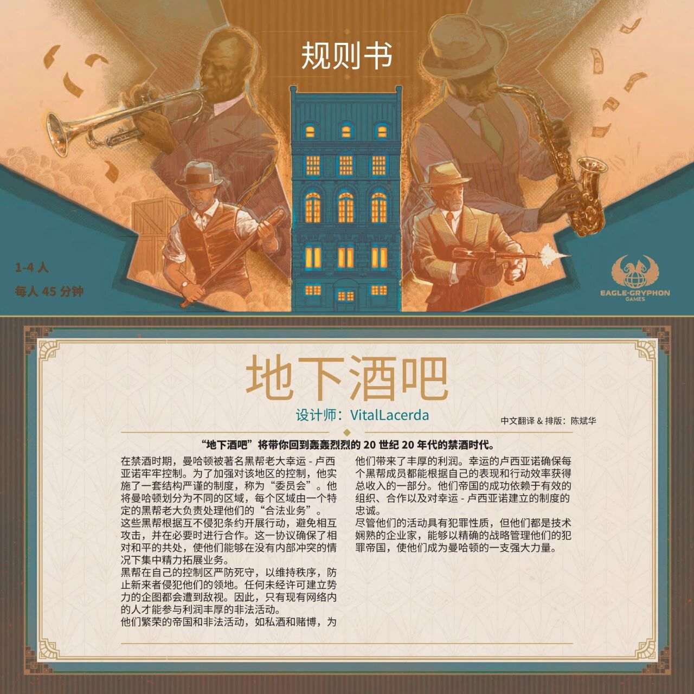
本页整理自微信公众号「桌游怎么玩」《地下酒吧，Speakeasy【桌游规则】》发布的《地下酒吧》(Speakeasy) 中文规则书（设计：Vital Lacerda，Eagle-Gryphon Games 出版，中文翻译&排版：陈斌华，全书 24 页含封面），逐页全文转录，原书扫描图随文嵌入——点击任意图片即可放大查看。规则内容归 Eagle-Gryphon Games、FRED Distribution 及版权方所有，转录仅供个人学习查阅。
整理说明：本译本为玩家汉化排版（陈斌华，译笔与《Age of Innovation》同源），非出版社官方中文规则书。陈斌华译本用语照录：「经营卡/经营牌」「经营版图」「分支头目」「家族成员」「打手」「合伙人黑帮」「恶名」「账簿」「木箱板块」「幸运卢西亚诺」等；「经营卡」与「经营牌」原书混用照录。原书排印问题较多，均照录并加〔原文如此〕：封面「VitalLacerda」无空格（P.1）、「每次翻开一板块」（P.4）、列表编号「a、b」后突为大写「C」（P.5）、「昂达」（P.5）、「将酒桶，经常，钱币」（P.5）、「将你的开设的」（P.6）、「放在在没有分支头目的人员身上」「见底 19 页」（P.8）、小节标题「幸运卢卡斯诺」与正文「卢西亚诺」不一致（P.9）、「黑帮地区 板块」空格、「地下酒馆都已丢失」「为了，支付」（P.9）、「3.2.」标题带句点（P.10）、「2 黑帮地下酒吧」量词（P.11）、「接管该酒馆」（P.14）、「至多 1 个夜店和 1 赌场」「选从你手上」（P.15）、「向卡车运送了一酒桶」「沆瀣一气」（P.16）、「见从你手上打出……」「家族成员会员」「有 3 家族成员」（P.17）、「拿到 15 美元到手」「St.Clair/St. Clair」拼写不一（P.18）、「移动回合顺位轨道下面一行」「这两个位置」（P.19）、「24 美元 /25 美元」（P.21）、「出手酒桶」「你的的手牌」（P.22）、「带有独特瓶子的帮助卡」（P.24）等。〔图 …〕说明与个别小节标题为整理所拟。
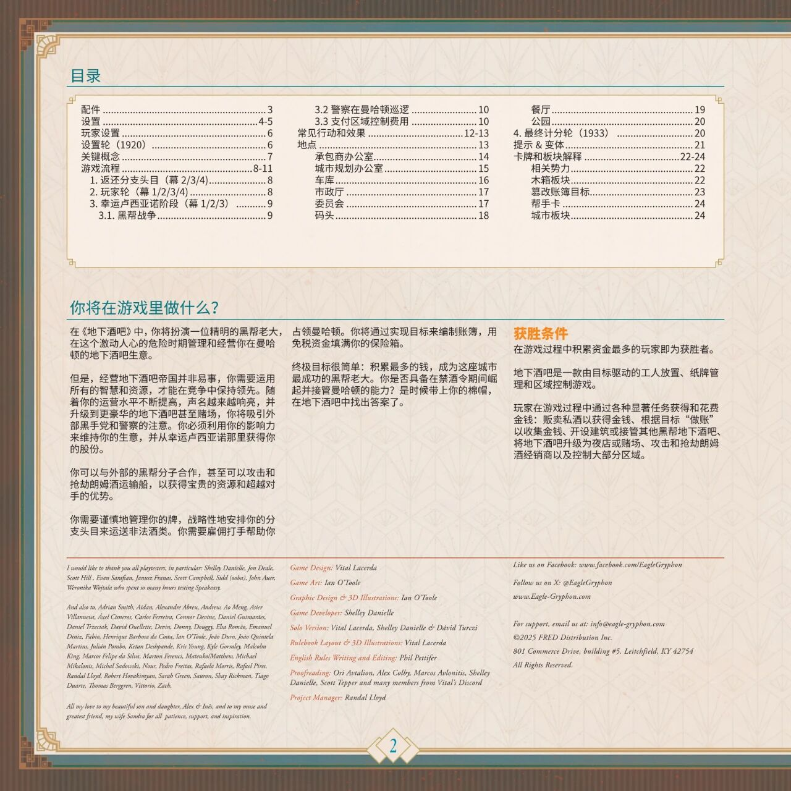
目录
- 配件 …… 3
- 设置 …… 4-5
- 玩家设置 …… 6
- 设置轮（1920） …… 6
- 关键概念 …… 7
- 游戏流程 …… 8-11
- 1. 返还分支头目（幕 2/3/4） …… 8
- 2. 玩家轮（幕 1/2/3/4） …… 8
- 3. 幸运卢西亚诺阶段（幕 1/2/3） …… 9
- 3.1. 黑帮战争 …… 9
- 3.2 警察在曼哈顿巡逻 …… 10
- 3.3 支付区域控制费用 …… 10
- 常见行动和效果 …… 12-13
- 地点 …… 13
- 承包商办公室 …… 14
- 城市规划办公室 …… 15
- 车库 …… 16
- 市政厅 …… 17
- 委员会 …… 17
- 码头 …… 18
- 餐厅 …… 19
- 公园 …… 20
- 4. 最终计分轮（1933） …… 20
- 提示 & 变体 …… 21
- 卡牌和板块解释 …… 22-24
- 相关势力 …… 22
- 木箱板块 …… 22
- 篡改账簿目标 …… 23
- 帮手卡 …… 24
- 城市板块 …… 24
你将在游戏里做什么?
在《地下酒吧》中，你将扮演一位精明的黑帮老大，在这个激动人心的危险时期管理和经营你在曼哈顿的地下酒吧生意。
但是，经营地下酒吧帝国并非易事，你需要运用所有的智慧和资源，才能在竞争中保持领先。随着你的运营水平不断提高，声名越来越响亮，并升级到更豪华的地下酒吧甚至赌场，你将吸引外部黑手党和警察的注意。你必须利用你的影响力来维持你的生意，并从幸运卢西亚诺那里获得你的股份。
你可以与外部的黑帮分子合作，甚至可以攻击和抢劫朗姆酒运输船，以获得宝贵的资源和超越对手的优势。
你需要谨慎地管理你的牌，战略性地安排你的分支头目来运送非法酒类。你需要雇佣打手帮助你占领曼哈顿。你将通过实现目标来编制账簿，用免税资金填满你的保险箱。
终极目标很简单：积累最多的钱，成为这座城市最成功的黑帮老大。你是否具备在禁酒令期间崛起并接管曼哈顿的能力？是时候带上你的棉帽〔原文如此〕，在地下酒吧中找出答案了。
获胜条件
在游戏过程中积累资金最多的玩家即为获胜者。
地下酒吧是一款由目标驱动的工人放置、纸牌管理和区域控制游戏。
玩家在游戏过程中通过各种显著任务获得和花费金钱：贩卖私酒以获得金钱、根据目标“做账”以收集金钱、开设建筑或接管其他黑帮地下酒吧、将地下酒吧升级为夜店或赌场、攻击和抢劫朗姆酒经销商以及控制大部分区域。
Credits
I would like to thank you all playtesters, in particular: Shelley Danielle, Jon Deale, Scott Hill , Evan Sanafian, Janusz Franas, Scott Campbell, Sidd (ooba), John Auer, Weronika Wójtała who spent so many hours testing Speakeasy.
And also to, Adrian Smith, Aidan, Alexandre Abreu, Andrew, Ao Meng, Asier Villanueva, Áxel Cisneros, Carlos Ferreira, Connor Devine, Daniel Guimarães, Daniel Trzeciak, David Ouellette, Devin, Donny, Douggy, Elsa Romão, Emanuel Diniz, Fabio, Henrique Barbosa da Costa, Ian O'Toole, João Duro, João Quintela Martins, Julián Pombo, Ketan Deshpande, Kris Young, Kyle Gormley, Malcolm King, Marcos Felipe da Silva, Marton Ferenci, Mateuko/Matthew, Michael Mikalonis, Michal Sadowski, Nour, Pedro Freitas, Rafaela Morris, Rafael Pires, Randal Lloyd, Robert Hovakimyan, Sarah Green, Sauron, Shay Rickman, Tiago Duarte, Thomas Berggren, Vittorio, Zach.
All my love to my beautiful son and daughter, Alex & Inês, and to my muse and greatest friend, my wife Sandra for all patience, support, and inspiration.
Game Design: Vital Lacerda
Game Art: Ian O'Toole
Graphic Design & 3D Illustrations: Ian O'Toole
Game Developer: Shelley Danielle
Solo Version: Vital Lacerda, Shelley Danielle & Dávid Turczi
Rulebook Layout & 3D Illustrations: Vital Lacerda
English Rules Writing and Editing: Phil Pettifer
Proofreading: Ori Avtalion, Alex Colby, Marcos Avlonitis, Shelley Danielle, Scott Tepper and many members from Vital's Discord
Project Manager: Randal Lloyd
Like us on Facebook: www.facebook.com/EagleGryphon
Follow us on X: @EagleGryphon
www.Eagle-Gryphon.com
For support, email us at: info@eagle-gryphon.com
©2025 FRED Distribution Inc.
801 Commerce Drive, building #5, Leitchfield, KY 42754
All Rights Reserved.
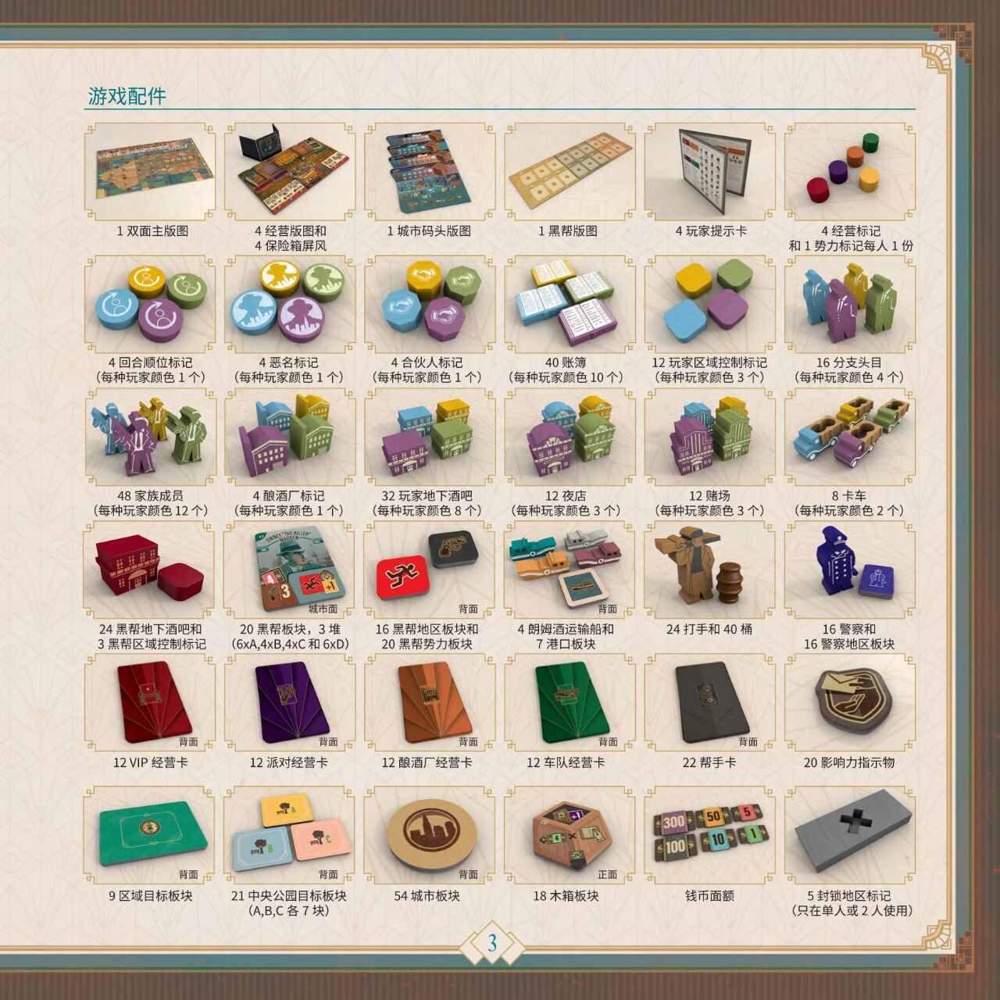
游戏配件
（本页为配件图鉴，每项上方有对应配件照片，下方为名称与数量。）
- 1 双面主版图
- 4 经营版图和 4 保险箱屏风
- 1 城市码头版图
- 1 黑帮版图
- 4 玩家提示卡
- 4 经营标记 和 1 势力标记每人 1 份
- 4 回合顺位标记（每种玩家颜色 1 个）
- 4 恶名标记（每种玩家颜色 1 个）
- 4 合伙人标记（每种玩家颜色 1 个）
- 40 账簿（每种玩家颜色 10 个）
- 12 玩家区域控制标记（每种玩家颜色 3 个）
- 16 分支头目（每种玩家颜色 4 个）
- 48 家族成员（每种玩家颜色 12 个）
- 4 酿酒厂标记（每种玩家颜色 1 个）
- 32 玩家地下酒吧（每种玩家颜色 8 个）
- 12 夜店（每种玩家颜色 3 个）
- 12 赌场（每种玩家颜色 3 个）
- 8 卡车（每种玩家颜色 2 个）
- 24 黑帮地下酒吧和 3 黑帮区域控制标记
- 20 黑帮板块，3 堆 (6xA,4xB,4xC 和 6xD） 〔图 照片内卡牌标"城市面"〕
- 16 黑帮地区板块和 20 黑帮势力板块 〔图 照片标"背面"〕
- 4 朗姆酒运输船和 7 港口板块 〔图 照片标"背面"〕
- 24 打手和 40 桶
- 16 警察和 16 警察地区板块
- 12 VIP 经营卡 〔图 照片标"背面"〕
- 12 派对经营卡 〔图 照片标"背面"〕
- 12 酿酒厂经营卡 〔图 照片标"背面"〕
- 12 车队经营卡 〔图 照片标"背面"〕
- 22 帮手卡 〔图 照片标"背面"〕
- 20 影响力指示物
- 9 区域目标板块 〔图 照片标"背面"〕
- 21 中央公园目标板块 (A,B,C 各 7 块） 〔图 照片标"背面"〕
- 54 城市板块 〔图 照片标"背面"〕
- 18 木箱板块 〔图 照片标"正面"〕
- 钱币面额 〔图 纸币照片，可见面值 300、100、50、10、5、1〕
- 5 封锁地区标记 (只在单人或 2 人使用)
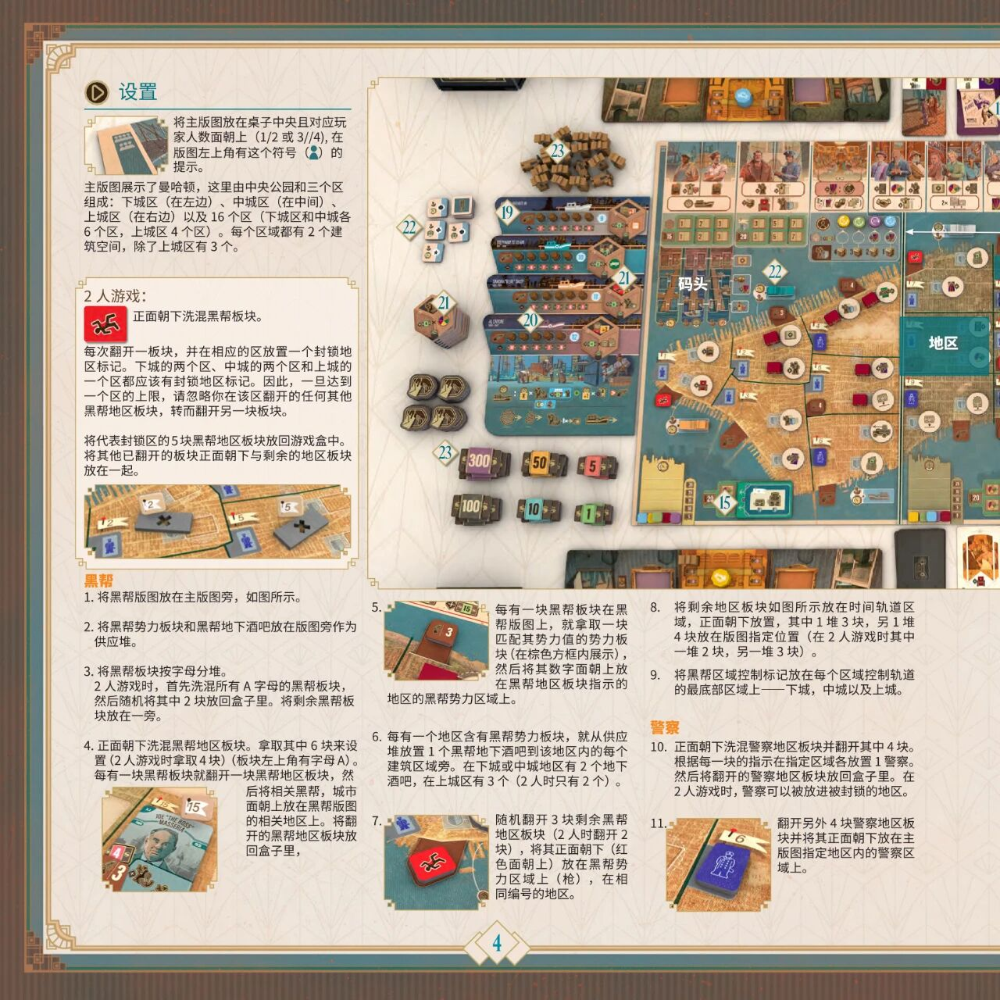
设置
将主版图放在桌子中央且对应玩家人数面朝上 (1/2 或 3/4), 在版图左上角有这个符号〔图 人形玩家图标〕的提示。
主版图展示了曼哈顿，这里由中央公园和三个区组成：下城区（在左边）、中城区（在中间）、上城区（在右边）以及 16 个区（下城区和中城各 6 个区，上城区 4 个区）。每个区域都有 2 个建筑空间，除了上城区有 3 个。
〔图 版图全景照片，展示设置完成后的主版图与玩家版图，带数字 19–23 的标注圆牌，可见版图上印有"码头""地区"等区域名称，以及钱币、卡牌等配件摆放〕
2 人游戏
〔图 红色跑动小人图标的板块图〕正面朝下洗混黑帮板块。
每次翻开一板块〔原文如此〕，并在相应的区放置一个封锁地区标记。下城的两个区、中城的两个区和上城的一个区都应该有封锁地区标记。因此，一旦达到一个区的上限，请忽略你在该区翻开的任何其他黑帮地区板块，转而翻开另一块板块。
将代表封锁区的5块黑帮地区板块放回游戏盒中。将其他已翻开的板块正面朝下与剩余的地区板块放在一起。
〔图 版图局部照片，展示两个灰色封锁板块与编号 2、5、15 的封锁地区小旗标记〕
黑帮
1. 将黑帮版图放在主版图旁，如图所示。
2. 将黑帮势力板块和黑帮地下酒吧放在版图旁作为供应堆。
3. 将黑帮板块按字母分堆。
2 人游戏时，首先洗混所有 A 字母的黑帮板块，然后随机将其中 2 块放回盒子里。将剩余黑帮板块放在一旁。
4. 正面朝下洗混黑帮地区板块。拿取其中 6 块来设置 (2 人游戏时拿取4块) (板块左上角有字母A）。每有一块黑帮板块就翻开一块黑帮地区板块，然后将相关黑帮，城市面朝上放在黑帮版图的相关地区上〔原文如此〕。将翻开的黑帮地区板块放回盒子里，〔原文如此：句末为逗号〕
〔图 版图局部照片，一块黑帮头目卡（卡面印英文人名）旁放着编号 15 的小旗标记〕
5. 〔图 黑帮版图局部照片，显示数字 3 的黑帮板块与其上的势力板块、编号 15 小旗〕每有一块黑帮板块在黑帮版图上，就拿取一块匹配其势力值的势力板块 (在棕色方框内展示），然后将其数字面朝上放在黑帮地区板块指示的地区的黑帮势力区域上。
6. 每有一个地区含有黑帮势力板块，就从供应堆放置 1 个黑帮地下酒吧到该地区内的每个建筑区域旁。在下城或中城地区有 2 个地下酒吧，在上城区有 3 个（2 人时只有 2 个）。
7. 〔图 版图局部照片，一块红色跑动小人图标面朝上的黑帮板块放在地区上〕随机翻开 3 块剩余黑帮地区板块（2 人时翻开 2 块），将其正面朝下（红色面朝上）放在黑帮势力区域上（枪），在相同编号的地区。
8. 将剩余地区板块如图所示放在时间轨道区域，正面朝下放置，其中 1 堆 3 块，另 1 堆 4 块放在版图指定位置（在 2 人游戏时其中一堆 2 块，另一堆 3 块）。
9. 将黑帮区域控制标记放在每个区域控制轨道的最底部区域上——下城，中城以及上城。
警察
10. 正面朝下洗混警察地区板块并翻开其中 4 块。根据每一块的指示在指定区域各放置 1 警察。然后将翻开的警察地区板块放回盒子里。在 2 人游戏时，警察可以被放进被封锁的地区。
11. 〔图 版图局部照片，蓝色警察图案的板块与编号 16 的小旗标记〕翻开另外 4 块警察地区板块并将其正面朝下放在主版图指定地区内的警察区域上。
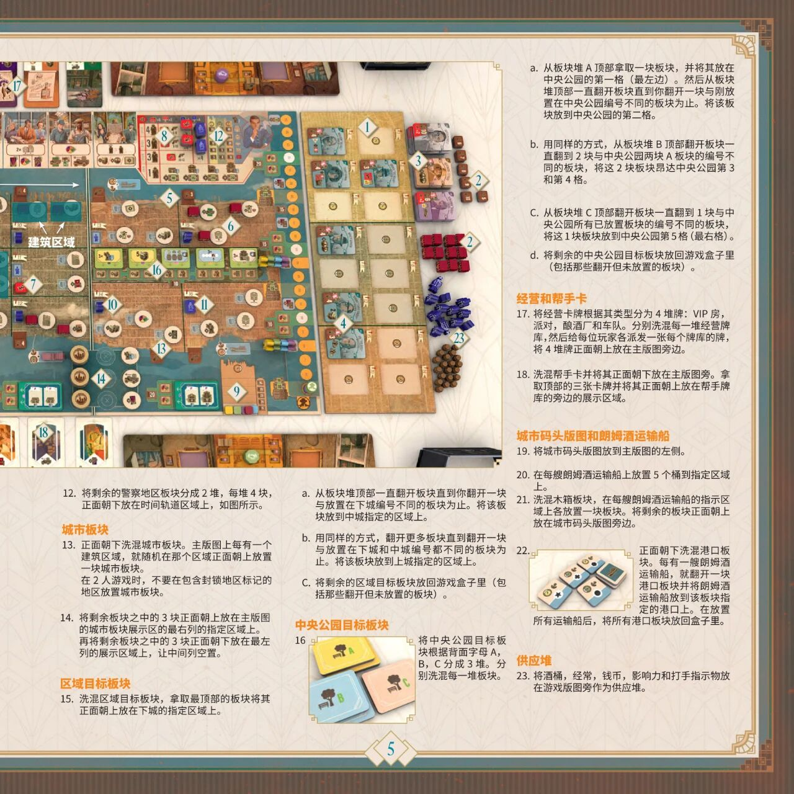
〔图 跨页大幅照片——游戏布置进行中的主版图，版图上有编号标注（如 17、8、12、5、6、16、7、10、11、13、14、9、4、1、2、3、18、23）并标出"建筑区域"，右侧为中央公园四格、板块堆 A/B/C 与木箱、红色与紫色指示物堆。〕
设置（续：步骤 12–23）
12. 将剩余的警察地区板块分成 2 堆，每堆 4 块，正面朝下放在时间轨道区域上，如图所示。
城市板块
13. 正面朝下洗混城市板块。主版图上每有一个建筑区域，就随机在那个区域正面朝上放置一块城市板块。
在 2 人游戏时，不要在包含封锁地区标记的地区放置城市板块。
14. 将剩余板块之中的 3 块正面朝上放在主版图的城市板块展示区的最右列的指定区域上。再将剩余板块之中的 3 块正面朝下放在最左列的展示区域上，让中间列空置。
区域目标板块
15. 洗混区域目标板块，拿取最顶部的板块将其正面朝上放在下城的指定区域上。
a. 从板块堆顶部一直翻开板块直到你翻开一块与放置在下城编号不同的板块为止。将该板块放到中城指定的区域上。
b. 用同样的方式，翻开更多板块直到翻开一块与放置在下城和中城编号都不同的板块为止。将该板块放到上城指定的区域上。
C. 将剩余的区域目标板块放回游戏盒子里（包括那些翻开但未放置的板块）。〔原文如此：此处列表编号为小写 a、b 加大写 C〕
中央公园目标板块
16. 〔图 中央公园目标板块照片——黄、蓝、橙三色板块背面分别印有字母 A、B、C 和树木/长椅图案。〕将中央公园目标板块根据背面字母 A，B，C 分成 3 堆。分别洗混每一堆板块。
a. 从板块堆 A 顶部拿取一块板块，并将其放在中央公园的第一格（最左边）。然后从板块堆顶部一直翻开板块直到你翻开一块与刚放置在中央公园编号不同的板块为止。将该板块放到中央公园的第二格。
b. 用同样的方式，从板块堆 B 顶部翻开板块一直翻到 2 块与中央公园两块 A 板块的编号不同的板块，将这 2 块板块昂达中央公园第 3 和第 4 格。〔原文如此："昂达"照录〕
C. 从板块堆 C 顶部翻开板块一直翻到 1 块与中央公园所有已放置板块的编号不同的板块，将这 1 块板块放到中央公园第 5 格（最右格）。
d. 将剩余的中央公园目标板块放回游戏盒子里（包括那些翻开但未放置的板块）。
经营和帮手卡
17. 将经营卡牌根据其类型分为 4 堆牌：VIP 房，派对，酿酒厂和车队。分别洗混每一堆经营牌库，然后给每位玩家各派发一张每个牌库的牌，将 4 堆牌正面朝上放在主版图旁边。
18. 洗混帮手卡并将其正面朝下放在主版图旁。拿取顶部的三张卡牌并将其正面朝上放在帮手牌库的旁边的展示区域。
城市码头版图和朗姆酒运输船
19. 将城市码头版图放到主版图的左侧。
20. 在每艘朗姆酒运输船上放置 5 个桶到指定区域上。
21. 洗混木箱板块，在每艘朗姆酒运输船的指示区域上各放置一块板块。将剩余的板块正面朝上放在城市码头版图旁边。
22. 〔图 港口板块照片——数块米色与蓝色的方形港口板块，上面印有锚、星星等图案，一旁为一叠板块。〕正面朝下洗混港口板块。每有一艘朗姆酒运输船，就翻开一块港口板块并将朗姆酒运输船放到该板块指定的港口上。在放置所有运输船后，将所有港口板块放回盒子里。
供应堆
23. 将酒桶，经常，钱币，影响力和打手指示物放在游戏版图旁作为供应堆。〔原文如此："经常"照录〕
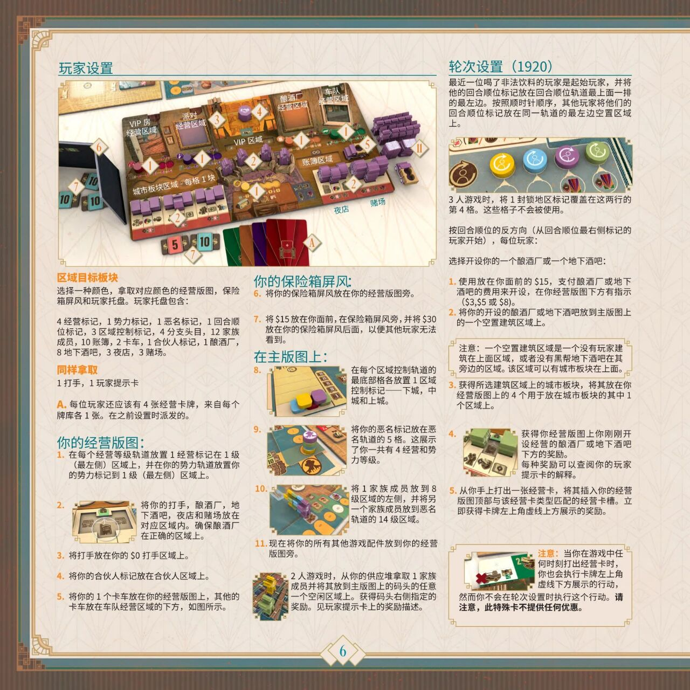
玩家设置
〔图 玩家经营版图与保险箱屏风的布置照片。版图上标注"VIP 房经营区域"、"派对经营区域"、"VIP 区域"、"城市板块区域—每格 1 块"等字样，并有编号标注（6、7、1、2、3 等）；屏风旁散落 $5、$10 钱币标记和卡牌。〕
区域目标板块
选择一种颜色，拿取对应颜色的经营版图，保险箱屏风和玩家托盘。玩家托盘包含：
4 经营标记，1 势力标记，1 恶名标记，1 回合顺位标记，3 区域控制标记，4 分支头目，12 家族成员，10 账簿，2 卡车，1 合伙人标记，1 酿酒厂，8 地下酒吧，3 夜店，3 赌场。
同样拿取
1 打手，1 玩家提示卡
A. 每位玩家还应该有 4 张经营卡牌，来自每个牌库各 1 张。在之前设置时派发的。
你的经营版图：
1. 在每个经营等级轨道放置 1 经营标记在 1 级（最左侧）区域上，并在你的势力轨道放置你的势力标记到 1 级（最左侧）区域上。
2. 〔图 经营版图局部照片——版图上的建筑凹槽与中心建筑图案。〕将你的打手，酿酒厂，地下酒吧，夜店和赌场放在对应区域内。确保酿酒厂在正确的区域上。
3. 将打手放在你的 $0 打手区域上。
4. 将你的合伙人标记放在合伙人区域上。
5. 将你的 1 个卡车放在你的经营版图上，其他的卡车放在车队经营区域的下方，如图所示。
你的保险箱屏风：
6. 将你的保险箱屏风放在你的经营版图旁。
7. 将 $15 放在你面前，在保险箱屏风旁，并将 $30 放在你的保险箱屏风后面，以便其他玩家无法看到。
在主版图上：
8. 〔图 主版图局部照片——区域控制轨道底格与彩色方块标记。〕在每个区域控制轨道的最底部格各放置 1 区域控制标记——下城，中城和上城。
9. 〔图 主版图局部照片——恶名轨道上的彩色圆柱标记。〕将你的恶名标记放在恶名轨道的 5 格。这展示了你一共有 4 经营和势力等级。
10. 〔图 主版图码头区域照片——家族成员木块放在版图边缘。〕将 1 家族成员放到 8 级区域的左侧，并将另一个家族成员放到恶名轨道的 14 级区域。
11. 现在将你的所有其他游戏配件放到你的经营版图旁。
〔图 家族成员木块放在码头区域的特写照片。〕2 人游戏时，从你的供应堆拿取 1 家族成员并将其放到主版图上的码头的任意一个空闲区域上。获得码头右侧指定的奖励。见玩家提示卡上的奖励描述。
轮次设置（1920）
最近一位喝了非法饮料的玩家是起始玩家，并将他的回合顺位标记放在回合顺位轨道最上面一排的最左边。按照顺时针顺序，其他玩家将他们的回合顺位标记放在同一轨道的最左边空置区域上。
〔图 回合顺位轨道照片——黄、蓝、紫、绿四枚回合顺位标记放在灰色轨道上，左侧有一枚棕色起始标记，轨道下方为印有卡牌图案的空格。〕
3 人游戏时，将 1 封锁地区标记覆盖在这两行的第 4 格。这些格子不会被使用。
按回合顺位的反方向（从回合顺位最右侧标记的玩家开始），每位玩家：
选择开设你的一个酿酒厂或一个地下酒吧：
1. 使用放在你面前的 $15，支付酿酒厂或地下酒吧的费用来开设，在你经营版图下方有指示（$3,$5 或 $8）。
2. 将你的开设的酿酒厂或地下酒吧放到主版图上的一个空置建筑区域上。〔原文如此："将你的开设的"照录〕
注意：一个空置建筑区域是一个没有玩家建筑在上面区域，或者没有黑帮地下酒吧在其旁边的区域。该区域可以有城市板块在上面。〔原文如此："建筑在上面区域"照录〕
3. 获得所选建筑区域上的城市板块，将其放在你经营版图上的 4 个用于放在城市板块的其中 1 个区域上。
4. 〔图 经营版图特写照片——绿色建筑放在凹槽上，下方为奖励图案。〕获得你经营版图上你刚刚开设经营的酿酒厂或地下酒吧下方的奖励。
每种奖励可以查阅你的玩家提示卡的解释。
5. 从你手上打出一张经营卡，将其插入你的经营版图顶部与该经营卡类型匹配的经营卡槽。立即获得卡牌左上角虚线上方展示的奖励。
〔图 一张绿色经营卡的照片，卡上压着红色 X 形标记。〕注意： 当你在游戏中任何时刻打出经营卡时，你也会执行卡牌左上角虚线下方展示的行动，然而你不会在轮次设置时执行这个行动。请注意，此特殊卡不提供任何优惠。
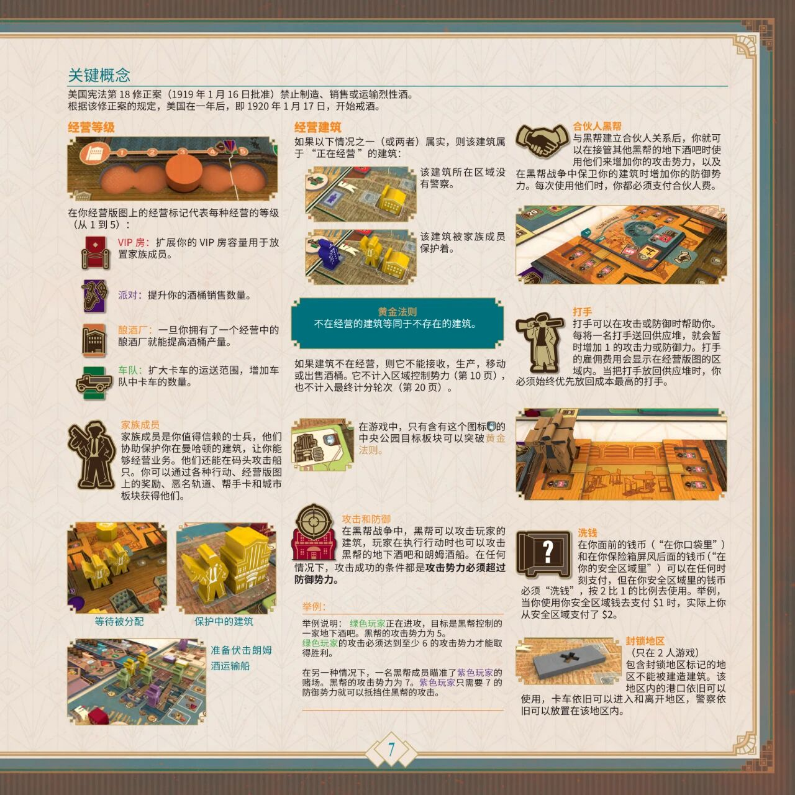
关键概念
美国宪法第 18 修正案（1919 年 1 月 16 日批准）禁止制造、销售或运输烈性酒。
根据该修正案的规定，美国在一年后，即 1920 年 1 月 17 日，开始戒酒。
经营等级
〔图 经营版图上的经营等级轨道照片，轨道上有数字 1 至 5，一个橙色圆盘标记放在数字 3 上，旁边还有一个小标记位于 4 与 5 之间〕
在你经营版图上的经营标记代表每种经营的等级（从 1 到 5）：
- VIP 房：扩展你的 VIP 房容量用于放置家族成员。
- 派对：提升你的酒桶销售数量。
- 酿酒厂：一旦你拥有了一个经营中的酿酒厂就能提高酒桶产量。
- 车队：扩大卡车的运送范围，增加车队中卡车的数量。
经营建筑
如果以下情况之一（或两者）属实，则该建筑属于"正在经营"的建筑：
- 〔图 版图局部照片，一个黄色建筑所在的城区，附近没有警察棋子〕该建筑所在区域没有警察。
- 〔图 版图局部照片，一个家族成员棋子站在黄色建筑旁〕该建筑被家族成员保护着。
黄金法则
不在经营的建筑等同于不存在的建筑。
如果建筑不在经营，则它不能接收，生产，移动或出售酒桶。它不计入区域控制势力（第 10 页），也不计入最终计分轮次（第 20 页）。
合伙人黑帮
〔图 握手图标〕
与黑帮建立合伙人关系后，你就可以在接管其他黑帮的地下酒吧时使用他们来增加你的攻击势力，以及在黑帮战争中保卫你的建筑时增加你的防御势力。每次使用他们时，你都必须支付合伙人费。
〔图 主版图局部照片，曼哈顿城区与各种建筑板块〕
打手
〔图 扛棍棒人物剪影图标〕
打手可以在攻击或防御时帮助你。每将一名打手送回供应堆，就会暂时增加 1 的攻击力或防御力。打手的雇佣费用会显示在经营版图的区域内。当把打手放回供应堆时，你必须始终优先放回成本最高的打手。
〔图 版图局部照片，码头区域摆放着若干打手棋子〕
家族成员
〔图 持枪黑衣人剪影图标〕
家族成员是你值得信赖的士兵，他们协助保护你在曼哈顿的建筑，让你能够经营业务。他们还能在码头攻击船只。你可以通过各种行动、经营版图上的奖励、恶名轨道、帮手卡和城市板块获得他们。
〔图 两张版图局部照片并排，左图数个黄色家族成员棋子待命，右图一个家族成员棋子守在一栋黄色建筑旁〕
等待被分配 保护中的建筑
〔图 版图局部照片，码头岸边站着多个不同颜色的家族成员棋子，面朝水面船只〕
准备伏击朗姆酒运输船
中央公园目标板块附注
〔图 中央公园目标板块局部照片，绿色底图上有一栋建筑图案和一个小图标〕
在游戏中，只有含有这个图标〔图 小盾形图标〕的中央公园目标板块可以突破黄金法则。
攻击和防御
〔图 准星瞄准红色建筑的图标〕
在黑帮战争中，黑帮可以攻击玩家的建筑，玩家在执行行动时也可以攻击黑帮的地下酒吧和朗姆酒船。在任何情况下，攻击成功的条件都是攻击势力必须超过防御势力。
举例：
举例说明：绿色玩家正在进攻，目标是黑帮控制的一家地下酒吧。黑帮的攻击势力为 5。
绿色玩家的攻击必须达到至少 6 的攻击势力才能取得胜利。
在另一种情况下，一名黑帮成员瞄准了紫色玩家的赌场。黑帮的攻击势力为 7。紫色玩家只需要 7 的防御势力就可以抵挡住黑帮的攻击。
洗钱
〔图 打开的保险箱图标，箱内有一个问号〕
在你面前的钱币（"在你口袋里"）和在你保险箱屏风后面的钱币（"在你的安全区域里"）可以在任何时刻支付，但在你安全区域里的钱币必须"洗钱"，按 2 比 1 的比例去使用。举例，当你使用你安全区域钱去支付 $1 时，实际上你从安全区域支付了 $2。
封锁地区
〔图 一块灰色长条封锁板块放在版图上的照片〕
（只在 2 人游戏）
包含封锁地区标记的地区不能被建造建筑。该地区内的港口依旧可以使用，卡车依旧可以进入和离开地区，警察依旧可以放置在该地区内。
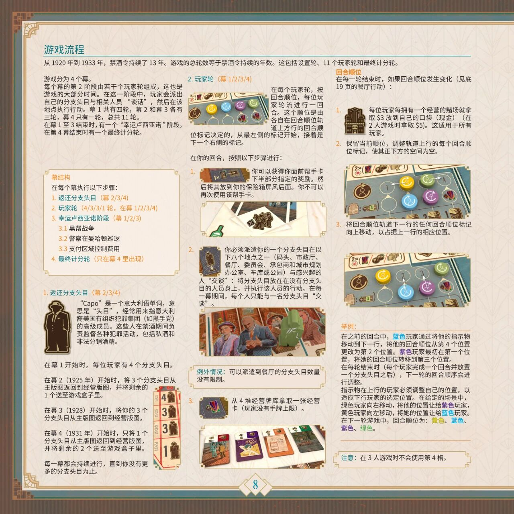
游戏流程
从 1920 年到 1933 年，禁酒令持续了 13 年。游戏的总轮数等于禁酒令持续的年数。这包括设置轮、11 个玩家轮和最终计分轮。
游戏分为 4 个幕。
每个幕的第 2 阶段由若干个玩家轮组成，这也是游戏的大部分时间。在这一阶段中，玩家会派出自己的分支头目与相关人员"谈话"，然后在该地点执行行动。幕 1 共有四轮，幕 2 和幕 3 各有三轮，幕 4 只有一轮，总共 11 轮。
在幕 1 至 3 结束时，有一个"幸运卢西亚诺"阶段。
在第 4 幕结束时有一个最终计分轮。
幕结构
在每个幕执行以下步骤：
1. 返还分支头目（幕 2/3/4）
2. 玩家轮（4/3/3/1 轮，在幕 1/2/3/4）
3. 幸运卢西亚诺阶段（幕 1/2/3）
3.1 黑帮战争
3.2 警察在曼哈顿巡逻
3.3 支付区域控制费用
4. 最终计分轮（只在幕 4 里出现）
1. 返还分支头目（幕 2/3/4）
〔图 戴帽穿大衣男子剪影图标〕
"Capo"是一个意大利语单词，意思是"头目"，经常用来指意大利裔美国有组织犯罪集团（如黑手党）的高级成员。这些人在禁酒期间负责监督各种犯罪活动，包括私酒和非法分销酒精。
在幕 1 开始时，每位玩家有 4 个分支头目。
在幕 2（1925 年）开始时，将 3 个分支头目从主版图返回到经营版图，并将剩余的 1 个送至游戏盒子里。
在幕 3（1928）开始时，将你的 3 个分支头目从主版图返回到经营版图。〔原文如此：此处"1928"后无"年"字〕
在幕 4（1931 年）开始时，只将 1 个分支头目从主版图返回到经营版图，并将剩余的 2 个送至游戏盒子里。
每一幕都会持续进行，直到你没有更多的分支头目为止。
〔图 右侧红框表格照片，四行，分别标数字 4、3、3、1 并各配一名黑衣人小图，左侧竖排年份（1925、1928、1931 等可见）〕
2. 玩家轮（幕 1/2/3/4）
〔图 回合顺位轨道局部照片，一行的圆位内放着黄、蓝、紫、绿四个彩色圆盘标记〕
在每个玩家轮，按回合顺位，每位玩家轮流进行一回合。这个顺位是由各自在回合顺位轨道上方行的回合顺位标记决定的，从最左侧的标记开始，接着是下一个右侧的标记。
在你的回合，按照以下步骤进行：
1. 〔图 帮手卡下半部分局部照片，标有"1×"及奖励图标〕你可以获得你面前帮手卡下半部分指定的奖励。然后将其放到你的保险箱屏风后面。你不可以再次使用该帮手卡。
〔图 照片，一张卡面上放置深色人形棋子和一个黑色小方块标记，左侧有绿色瓶子〕
2. 〔图 一张卡牌上立着分支头目棋子的小图标〕你必须派遣你的一个分支头目在以下八个地点之一（码头、市政厅、餐厅、委员会、承包商和城市规划办公室、车库或公园）与感兴趣的人"谈话"：将分支头目放在在没有分支头目的人员身上〔原文如此："放在在"用字重复〕，并执行该人员的行动。在每一幕期间，每个人只能与一名分支头目"交谈"。
〔图 照片，几位穿大衣戴帽的人物场景〕
例外情况：可以派遣到餐厅的分支头目数量没有限制。
3. 〔图 一张斜放卡牌加抽取符号的小图标〕从 4 堆经营牌库拿取一张经营卡（玩家没有手牌上限）。
〔图 照片，桌面上四堆不同颜色的经营卡牌库〕
回合顺位
在每一轮结束时，如果回合顺位发生变化（见底 19 页的餐厅行动）〔原文如此："见底 19 页"疑为"见第 19 页"〕：
1. 〔图 赌场建筑剪影图标〕每位玩家每拥有一个经营的赌场就拿取 $3 放到自己的口袋（现金）（在 2 人游戏时拿取 $5）。这适用于所有玩家。
2. 保留当前顺位，调整轨道上行的每个回合顺位标记，使其正下方的空间为空。
〔图 回合顺位轨道局部照片，彩色圆盘标记旁有白色箭头指向空位圆圈，可见数字 1 和 4〕
3. 将回合顺位轨道下一行的任何回合顺位标记向上移动，以占据上一行的相应位置。
〔图 回合顺位轨道局部照片，上方为"2×"费用行，数字圆圈 2、3 一带放着彩色圆盘标记并有白色箭头指示移动〕
举例：
在之前的回合中，蓝色玩家通过将他的指示物移动到下一行，将他的回合顺位从第 4 个位置更改为第 2 个位置。紫色玩家最初在第一个位置，将她的回合顺位转移到第三个位置。
在每轮结束时（每个玩家完成一个回合并放置一个分支头目之后），下一轮的回合顺序会进行调整。
指示物在上行的玩家必须调整自己的位置，以适应下行玩家的选定位置。在给定的场景中，绿色玩家向右移动，将他的位置让给紫色玩家，黄色玩家向左移动，将她的位置让给蓝色玩家。
在下一轮游戏中，回合顺位为：黄色、蓝色、紫色、绿色。
注意：在 3 人游戏时不会使用第 4 格。
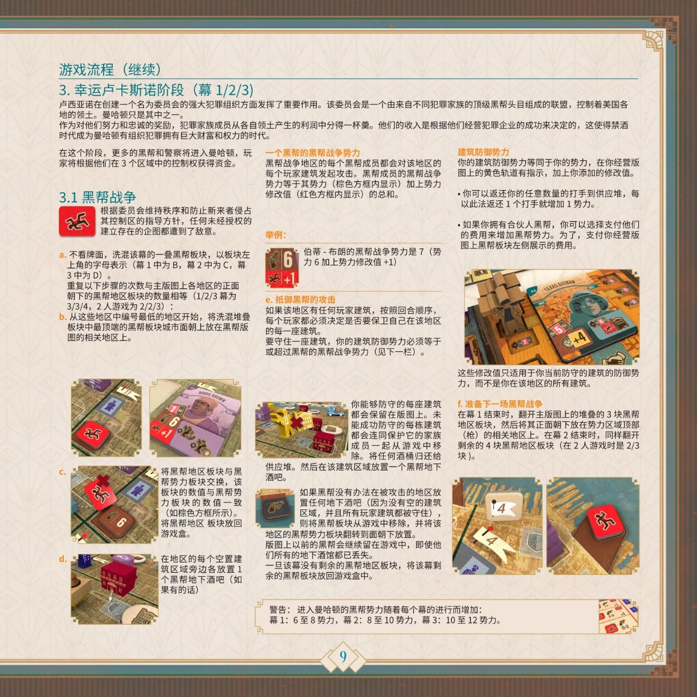
游戏流程（继续）
3. 幸运卢卡斯诺阶段（幕 1/2/3）〔原文如此：正文作"卢西亚诺"〕
卢西亚诺在创建一个名为委员会的强大犯罪组织方面发挥了重要作用。该委员会是一个由来自不同犯罪家族的顶级黑帮头目组成的联盟，控制着美国各地的领土。曼哈顿只是其中之一。
作为对他们努力和忠诚的奖励，犯罪家族成员从各自领土产生的利润中分得一杯羹。他们的收入是根据他们经营犯罪企业的成功来决定的，这使得禁酒时代成为曼哈顿有组织犯罪拥有巨大财富和权力的时代。
3.1 黑帮战争
〔图 红色方形图标，内有黑色奔跑人形图案〕
根据委员会维持秩序和防止新来者侵占其控制区的指导方针，任何未经授权的建立存在的企图都遭到了敌意。
a. 不看牌面，洗混该幕的一叠黑帮板块，以板块左上角的字母表示（幕 1 中为 B，幕 2 中为 C，幕 3 中为 D）。
重复以下步骤的次数与主版图上各地区的正面朝下的黑帮地区板块的数量相等（1/2/3 幕为 3/3/4，2 人游戏为 2/2/3）：
b. 从这些地区中编号最低的地区开始，将洗混堆叠板块中最顶端的黑帮板块城市面朝上放在黑帮版图的相关地区上。
〔图 两张版图照片：红色黑帮板块放置在版图地区上；"BIRDIE BROWN"黑帮板块（棕色方框"6"、红色方框"+1"）与打手棋子特写〕
c. 〔图 版图照片：红色黑帮板块与棕色"6"黑帮势力板块交换〕
将黑帮地区板块与黑帮势力板块交换，该板块的数值与黑帮势力板块的数值一致（如棕色方框所示）。将黑帮地区 板块放回游戏盒。〔原文如此："黑帮地区 板块"中有空格〕
d. 〔图 版图照片：红色建筑旁放置黑帮地下酒吧标记〕
在地区的每个空置建筑区域旁边各放置 1 个黑帮地下酒吧（如果有的话）
一个黑帮的黑帮战争势力
黑帮战争地区的每个黑帮成员都会对该地区的每个玩家建筑发起攻击。黑帮成员的黑帮战争势力等于其势力（棕色方框内显示）加上势力修改值（红色方框内显示）的总和。
举例：
〔图 黑帮板块局部特写：棕色方框内"6"、红色方框内"+1"〕
伯蒂 - 布朗的黑帮战争势力是 7（势力 6 加上势力修改值 +1）
e. 抵御黑帮的攻击
如果该地区有任何玩家建筑，按照回合顺序，每个玩家都必须决定是否要保卫自己在该地区的每一座建筑。
要守住一座建筑，你的建筑防御势力必须等于或超过黑帮的黑帮战争势力（见下一栏）。
〔图 版图照片：黄色与红色玩家建筑被攻击（红色 X 标记）〕
你能够防守的每座建筑都会保留在版图上。未能成功防守的每栋建筑都会连同保护它的家族成员一起从游戏中移除。将任何酒桶归还给供应堆。然后在该建筑区域放置一个黑帮地下酒吧。
〔图 棕色黑帮板块（手枪图案）特写〕
如果黑帮没有办法在被攻击的地区放置任何地下酒吧（因为没有空的建筑区域，并且所有玩家建筑都被守住），则将黑帮板块从游戏中移除，并将该地区的黑帮势力板块翻转到面朝下放置。
版图上以前的黑帮会继续留在游戏中，即使他们所有的地下酒馆都已丢失。〔原文如此〕
一旦该幕没有剩余的黑帮地区板块，将该幕剩余的黑帮板块放回游戏盒中。
建筑防御势力
你的建筑防御势力等同于你的势力，在你经营版图上的黄色轨道有指示，加上你添加的修改值。
- 你可以返还你的任意数量的打手到供应堆，每以此法返还 1 个打手就增加 1 势力。
- 如果你拥有合伙人黑帮，你可以选择支付他们的费用来增加黑帮势力。为了，支付你经营版图上黑帮板块左侧展示的费用。〔原文如此〕
〔图 经营版图与黑帮板块照片：板块上显示数值 5、+4、+1 等标记〕
这些修改值只适用于你当前防守的建筑的防御势力，而不是你在该地区的所有建筑。
f. 准备下一场黑帮战争
在幕 1 结束时，翻开主版图上的堆叠的 3 块黑帮地区板块，然后将其正面朝下放在势力区域顶部（枪）的相关地区上。在幕 2 结束时，同样翻开剩余的 4 块黑帮地区板块（在 2 人游戏时是 2/3 块）。
〔图 两张版图照片：地区上的旗帜标记（数字"4"）与红色黑帮板块放置〕
警告：黑帮势力逐幕增强
警告：进入曼哈顿的黑帮势力随着每个幕的进行而增加：
幕 1：6 至 8 势力，幕 2：8 至 10 势力，幕 3：10 至 12 势力。
〔图 警告框右侧小图：堆叠的黑帮势力板块，显示"6-8""8-10""10-12"等数值〕
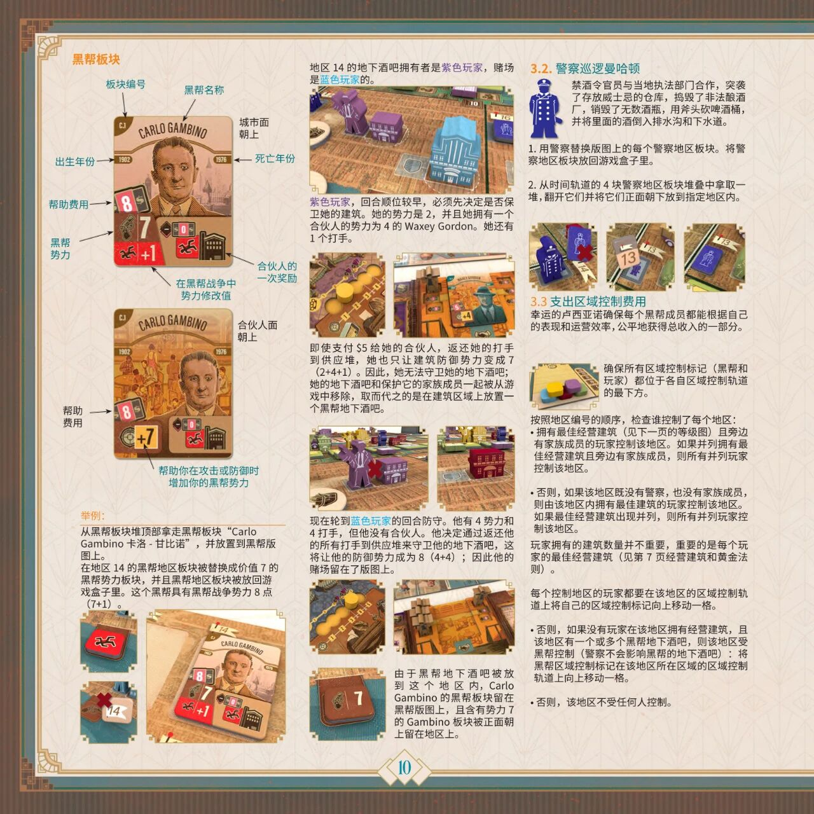
黑帮板块图解
〔图 黑帮板块"CARLO GAMBINO"（左上角编号 C.I）图解，城市面朝上，周围引线标注各要素（标注文字如下）〕
- 板块编号
- 黑帮名称
- 城市面朝上
- 出生年份（图中：1902）
- 死亡年份（图中：1976）
- 帮助费用
- 黑帮势力
- 在黑帮战争中势力修改值
- 合伙人的一次奖励
〔图 同一黑帮板块"CARLO GAMBINO"合伙人面朝上〕
- 合伙人面朝上
- 帮助费用
- 帮助你在攻击或防御时增加你的黑帮势力（指向图中"+7"方框）
举例：
从黑帮板块堆顶部拿走黑帮板块 "Carlo Gambino 卡洛 - 甘比诺"，并放置到黑帮版图上。
在地区 14 的黑帮地区板块被替换成价值 7 的黑帮势力板块，并且黑帮地区板块被放回游戏盒子里。这个黑帮具有黑帮战争势力 8 点（7+1）。
〔图 三张照片：红色黑帮板块特写；带红色 X 的黑帮势力板块与"14"地区旗帜；"CARLO GAMBINO"黑帮板块放置在黑帮版图地区上〕
举例（续）
地区 14 的地下酒吧拥有者是紫色玩家，赌场是蓝色玩家的。
〔图 版图照片：地区 14 中紫色玩家棋子与紫色建筑、蓝色赌场建筑〕
紫色玩家，回合顺位较早，必须先决定是否保卫她的建筑。她的势力是 2，并且她拥有一个合伙人的势力为 4 的 Waxey Gordon。她还有 1 个打手。
〔图 两张照片：经营版图上的黄色势力轨道；"WAXEY GORDON"合伙人板块〕
即使支付 $5 给她的合伙人，返还她的打手到供应堆，她也只让建筑防御势力变成 7（2+4+1）。因此，她无法守卫她的地下酒吧；她的地下酒吧和保护它的家族成员一起被从游戏中移除，取而代之的是在建筑区域上放置一个黑帮地下酒吧。
〔图 两张照片：紫色玩家棋子旁的红色 X 与紫色建筑；红色建筑保留在版图上〕
现在轮到蓝色玩家的回合防守。他有 4 势力和 4 打手，但他没有合伙人。他决定通过返还他的所有打手到供应堆来守卫他的地下酒吧，这将让他的防御势力成为 8（4+4）；因此他的赌场留在了版图上。
〔图 两张照片：经营版图势力轨道；黑帮版图与合伙人版图区域〕
〔图 棕色"7"黑帮势力板块特写〕
由于黑帮地下酒吧被放到这个地区内，Carlo Gambino 的黑帮板块留在黑帮版图上，且含有势力 7 的 Gambino 板块被正面朝上留在地区上。
3.2. 警察巡逻曼哈顿〔原文如此：标题带句点，3.1、3.3 无〕
〔图 蓝色警察棋子图标〕
禁酒令官员与当地执法部门合作，突袭了存放威士忌的仓库，捣毁了非法酿酒厂，销毁了无数酒瓶，用斧头砍啤酒桶，并将里面的酒倒入排水沟和下水道。
1. 用警察替换版图上的每个警察地区板块。将警察地区板块放回游戏盒子里。
2. 从时间轨道的 4 块警察地区板块堆叠中拿取一堆，翻开它们并将它们正面朝下放到指定地区内。
〔图 三张版图照片：警察棋子与警察地区板块（带红色 X）；"13"地区旗帜与警察地区板块；警察地区板块放置在"13"地区〕
3.3 支出区域控制费用
幸运的卢西亚诺确保每个黑帮成员都能根据自己的表现和运营效率，公平地获得总收入的一部分。
〔图 经营版图照片：彩色区域控制标记堆放在轨道下方〕
确保所有区域控制标记（黑帮和玩家）都位于各自区域控制轨道的最下方。
按照地区编号的顺序，检查谁控制了每个地区：
- 拥有最佳经营建筑（见下一页的等级图）且旁边有家族成员的玩家控制该地区。如果并列拥有最佳经营建筑且旁边有家族成员，则所有并列玩家控制该地区。
- 否则，如果该地区既没有警察，也没有家族成员，则由该地区内拥有最佳建筑的玩家控制该地区。如果最佳经营建筑出现并列，则所有并列玩家控制该地区。
玩家拥有的建筑数量并不重要，重要的是每个玩家的最佳经营建筑（见第 7 页经营建筑和黄金法则）。
每个控制地区的玩家都要在该地区的区域控制轨道上将自己的区域控制标记向上移动一格。
- 否则，如果没有玩家在该地区拥有经营建筑，且该地区有一个或多个黑帮地下酒吧，则该地区受黑帮控制（警察不会影响黑帮的地下酒吧）：将黑帮区域控制标记在该地区所在区域的区域控制轨道上向上移动一格。
- 否则，该地区不受任何人控制。
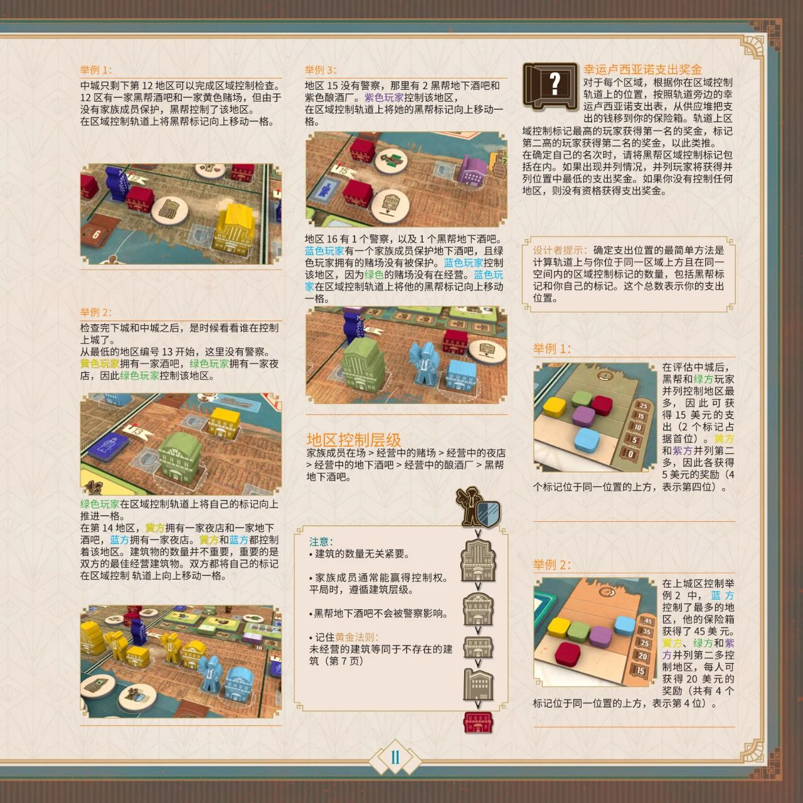
举例 1:
中城只剩下第 12 地区可以完成区域控制检查。12 区有一家黑帮酒吧和一家黄色赌场，但由于没有家族成员保护，黑帮控制了该地区。
在区域控制轨道上将黑帮标记向上移动一格。
〔图 版图照片，第 12 地区，蓝、红色建筑与白色圆形板，黄色建筑〕
举例 2:
检查完下城和中城之后，是时候看看谁在控制上城了。
从最低的地区编号 13 开始，这里没有警察。黄色玩家拥有一家酒吧，绿色玩家拥有一家夜店，因此绿色玩家控制该地区。
〔图 版图照片，第 13 地区，蓝色玩家棋子、绿色建筑与黄色建筑〕
绿色玩家在区域控制轨道上将自己的标记向上推进一格。
在第 14 地区，黄方拥有一家夜店和一家地下酒吧，蓝方拥有一家夜店。黄方和蓝方都控制着该地区。建筑物的数量并不重要，重要的是双方的最佳经营建筑物。双方都将自己的标记在区域控制轨道上向上移动一格。
〔图 版图照片，多栋黄色、蓝色建筑与白色圆形板〕
举例 3:
地区 15 没有警察，那里有 2 黑帮地下酒吧和紫色酿酒厂。〔原文如此：应为"2 家黑帮地下酒吧"〕紫色玩家控制该地区，
在区域控制轨道上将她的黑帮标记向上移动一格。
〔图 版图照片，第 15 地区，两栋红色建筑、白色圆形板与紫色建筑〕
地区 16 有 1 个警察，以及 1 个黑帮地下酒吧。蓝色玩家有一个家族成员保护地下酒吧，且绿色玩家拥有的赌场没有被保护。蓝色玩家控制该地区，因为绿色的赌场没有在经营。蓝色玩家在区域控制轨道上将他的黑帮标记向上移动一格。
〔图 版图照片，第 16 地区，绿色建筑、蓝色玩家棋子、红色建筑、蓝色建筑与白色圆形板〕
地区控制层级
家族成员在场 > 经营中的赌场 > 经营中的夜店 > 经营中的地下酒吧 > 经营中的酿酒厂 > 黑帮地下酒吧。
〔图 建筑层级竖排图示，自上而下为家族成员（持盾）、赌场、夜店、地下酒吧、酿酒厂、黑帮地下酒吧，各层之间以向下箭头相连〕
注意：
- 建筑的数量无关紧要。
- 家族成员通常能赢得控制权。平局时，遵循建筑层级。
- 黑帮地下酒吧不会被警察影响。
- 记住黄金法则：
未经营的建筑等同于不存在的建筑（第 7 页）
幸运卢西亚诺支出奖金
〔图 标题左侧有一个带问号的保险箱图标〕
对于每个区域，根据你在区域控制轨道上的位置，按照轨道旁边的幸运卢西亚诺支出表，从供应堆把支出的钱移到你的保险箱。轨道上区域控制标记最高的玩家获得第一名的奖金，标记第二高的玩家获得第二名的奖金，以此类推。在确定自己的名次时，请将黑帮区域控制标记包括在内。如果出现并列情况，并列玩家将获得并列位置中最低的支出奖金。如果你没有控制任何地区，则没有资格获得支出奖金。
（边框提示框）
设计者提示：确定支出位置的最简单方法是计算轨道上与你位于同一区域上方且在同一空间内的区域控制标记的数量，包括黑帮标记和你自己的标记。这个总数表示你的支出位置。
举例 1:
在评估中城后，黑帮和绿方玩家并列控制地区最多，因此可获得 15 美元的支出（2 个标记占据首位）。黄方和紫方并列第二多，因此各获得 5 美元的奖励（4 个标记位于同一位置的上方，表示第四位）。
〔图 区域控制轨道照片，五枚颜色标记（黄、绿、红、紫、蓝），旁边支出表数值 25、15、10、5、0〕
举例 2:
在上城区控制举例 2 中，蓝方控制了最多的地区，他的保险箱获得了 45 美元。黄方、绿方和紫方并列第二多控制地区，每人可获得 20 美元的奖励（共有 4 个标记位于同一位置的上方，表示第 4 位）。
〔图 区域控制轨道照片，五枚颜色标记，旁边支出表数值 45、35、25、20、15〕
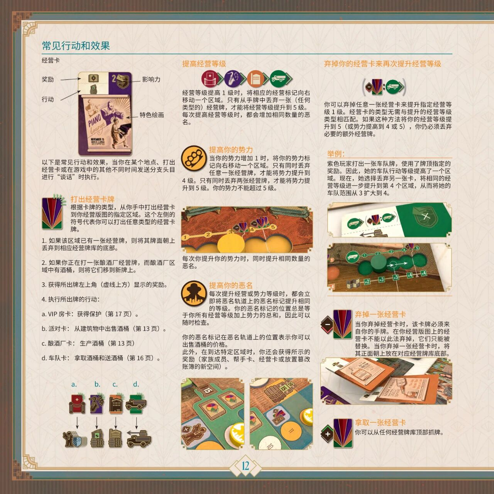
常见行动和效果
经营卡
〔图 一张经营卡示例（紫色，卡面印 "PIANO lounge" 海报画），旁有标注箭头：奖励（左上角）、行动（左上部图标）、影响力（右上角，数字 2）、特色绘画（卡面插画）〕
以下是常见行动和效果，当你在某个地点、打出经营卡或在游戏中的其他不同时间发送分支头目进行“谈话”时执行。
打出经营卡牌
根据卡牌的类型，从你手中打出经营卡到你经营版图的指定区域。这个左侧的符号代表你可以打出任意类型的经营卡牌。
〔图 左侧为彩色扇形符号图标〕
1. 如果该区域已有一张经营牌，则将其牌面朝上丢弃到相应经营牌库的底部。
2. 如果你正在打一张酿酒厂经营牌，而酿酒厂区域中有酒桶，则将它们移到新牌上。
3. 获得所出牌左上角（虚线上方）显示的奖励。
4. 执行所出牌的行动：
a. VIP 房卡：获得保护（第 17 页）。
b. 派对卡：从建筑物中出售酒桶（第 13 页）。
c. 酿酒厂卡：生产酒桶（第 13 页）〔原文如此：句末无句号〕
d. 车队卡：拿取酒桶和送酒桶（第 16 页）。
〔图 四种卡牌图标标注 a.、b.、c.、d.（VIP 房卡、派对卡、酿酒厂卡、车队卡），向下箭头分别指向对应效果图标（家族成员与盾、钱、酒桶堆、卡车运桶）〕
提高经营等级
〔图 四个经营等级圆形图标依次排列：VIP 房、派对（萨克斯）、酿酒厂、车队（卡车），之间以箭头相连〕
经营等级提高 1 级时，将相应的经营标记向右移动一个区域。只有从手牌中丢弃一张（任何类型的）经营牌，才能将经营等级提升到 5 级。每次提高经营等级时，都会增加相同数量的恶名。
提高你的势力
当你的势力增加 1 时，将你的势力标记向右移动一个区域。只有同时丢弃任意一张经营牌，才能将势力提升到 4 级。只有同时丢弃两张经营牌，才能将势力提升到 5 级。你的势力不能超过 5 级。
〔图 势力轨道照片，1–5 数字轨道上有彩色标记，一枚带减号的经营卡标记位于 3、4 之间〕
每次你提升你的势力时，同时提升相同数量的恶名。
提高你的恶名
每次提升经营或势力等级时，都会立即将恶名轨道上的恶名标记提升相同的等级。你的恶名标记的位置总是等于你所有经营等级加上势力的总和，因此可以随时检查。
你的恶名标记在恶名轨道上的位置表示你可以出售酒桶的价格。
此外，在到达特定区域时，你还会获得所示的奖励（家族成员、帮手卡、经营卡或放置篡改账簿的新空间）。
〔图 两张玩家版图/恶名轨道局部照片〕
弃掉你的经营卡来再次提升经营等级
〔图 符号组合图示（减号经营卡符号、冒号、车队行动箭头符号，整体加括号）〕
你可以弃掉任意一张经营卡来提升指定经营等级 1 级。经营卡的类型无需与提升的经营等级类型相匹配。如果这种方法将你的经营等级提升到 5（或势力提高到 4 或 5），你仍必须丢弃必要的额外经营牌。
举例：
紫色玩家打出一张车队牌，使用了牌顶指定的奖励。因此，她的车队行动等级提高了一个区域。现在，她选择丢弃另一张卡，将相同的经营等级进一步提升到第 4 个区域，从而将她的车队范围从 3 扩大到 4。
〔图 车队牌顶部区域照片，牌上印有车队符号与弃卡组合符号，旁边绿色区域印有 X 图案〕
〔图 车队范围轨道照片，1–4 数字轨道上有卡车标记与箭头〕
弃掉一张经营卡
当你弃掉经营卡时，该卡牌必须来自你的手牌。在你经营版图上的经营卡不能以此法弃掉，它们只能被替换。当你弃掉一张经营卡时，将其正面朝上放在对应经营牌库底部。
〔图 图标为减号符号与彩色扇形经营卡符号；下方为经营版图与牌库照片〕
拿取一张经营卡
你可以从任何经营牌库顶部抓牌。
〔图 图标为加号符号与彩色扇形经营卡符号〕
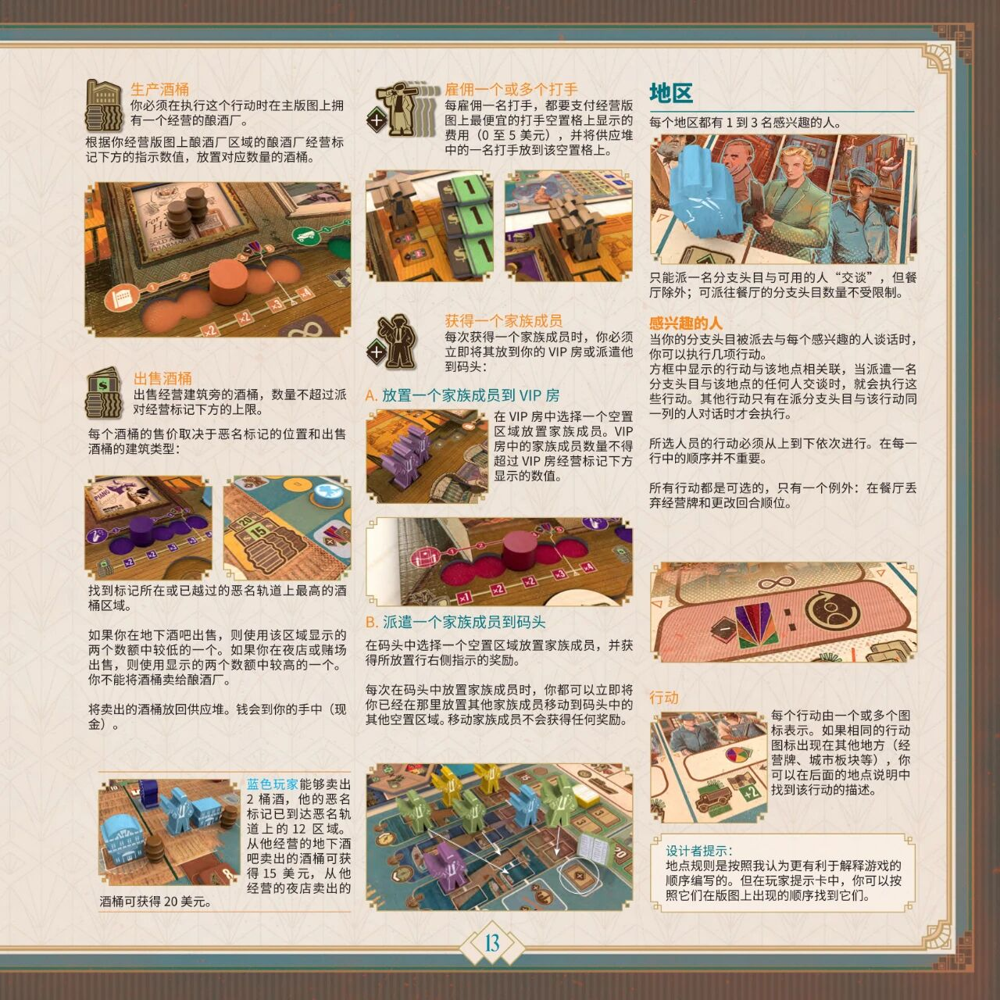
生产酒桶
〔图 酿酒厂与酒桶图标〕
你必须在执行这个行动时在主版图上拥有一个经营的酿酒厂。
根据你经营版图上酿酒厂区域的酿酒厂经营标记下方的指示数值，放置对应数量的酒桶。
〔图 主版图酿酒厂区域照片，经营标记轨道上放置橙色圆柱酒桶〕
出售酒桶
〔图 钞票与酒桶图标〕
出售经营建筑旁的酒桶，数量不超过派对经营标记下方的上限。
每个酒桶的售价取决于恶名标记的位置和出售酒桶的建筑类型：
〔图 两张照片，左为经营版图恶名轨道与紫色酒桶，右为标有 20/15 数值的板块〕
找到标记所在或已越过的恶名轨道上最高的酒桶区域。
如果你在地下酒吧出售，则使用该区域显示的两个数额中较低的一个。如果你在夜店或赌场出售，则使用显示的两个数额中较高的一个。你不能将酒桶卖给酿酒厂。
将卖出的酒桶放回供应堆。钱会到你的手中（现金）。
〔图 照片，蓝色家族成员棋子与蓝色建筑旁放着酒桶〕
蓝色玩家能够卖出 2 桶酒，他的恶名标记已到达恶名轨道上的 12 区域。从他经营的地下酒吧卖出的酒桶可获得 15 美元，从他经营的夜店卖出的酒桶可获得 20 美元。
雇佣一个或多个打手
〔图 打手图标〕
每雇佣一名打手，都要支付经营版图上最便宜的打手空置格上显示的费用（0 至 5 美元），并将供应堆中的一名打手放到该空置格上。
〔图 两张照片，左为打手空置格与费用数字，右为打手米宝〕
获得一个家族成员
〔图 持枪家族成员图标〕
每次获得一个家族成员时，你必须立即将其放到你的 VIP 房或派遣他到码头：
A. 放置一个家族成员到 VIP 房
〔图 VIP 房区域照片，紫色家族成员棋子并排放置〕
在 VIP 房中选择一个空置区域放置家族成员。VIP 房中的家族成员数量不得超过 VIP 房经营标记下方显示的数值。
〔图 照片，红色圆柱位于标有 -1/-2/-3 的经营标记轨道上〕
B. 派遣一个家族成员到码头
在码头中选择一个空置区域放置家族成员，并获得所放置行右侧指示的奖励。
每次在码头中放置家族成员时，你都可以立即将你已经在那里放置其他家族成员移动到码头中的其他空置区域。移动家族成员不会获得任何奖励。
〔图 主版图码头区域大照片，多色家族成员棋子分布在码头空置格上〕
地区
每个地区都有 1 到 3 名感兴趣的人。
〔图 地区插画照片，蓝色分支头目棋子立于卡牌前〕
只能派一名分支头目与可用的人"交谈"，但餐厅除外；可派往餐厅的分支头目数量不受限制。
感兴趣的人
当你的分支头目被派去与每个感兴趣的人谈话时，你可以执行几项行动。
方框中显示的行动与该地点相关联，当派遣一名分支头目与该地点的任何人交谈时，就会执行这些行动。其他行动只有在派分支头目与该行动同一列的人对话时才会执行。
所选人员的行动必须从上到下依次进行。在每一行中的顺序并不重要。
所有行动都是可选的，只有一个例外：在餐厅丢弃经营牌和更改回合顺位。
〔图 照片，地点卡上的方框行动图标与无限符号〕
行动
每个行动由一个或多个图标表示。如果相同的行动图标出现在其他地方（经营牌、城市板块等），你可以在后面的地点说明中找到该行动的描述。
〔图 照片，经营牌局部与货车、+2 等行动图标〕
设计者提示：地点规则是按照我认为更有利于解释游戏的顺序编写的。但在玩家提示卡中，你可以按照它们在版图上出现的顺序找到它们。
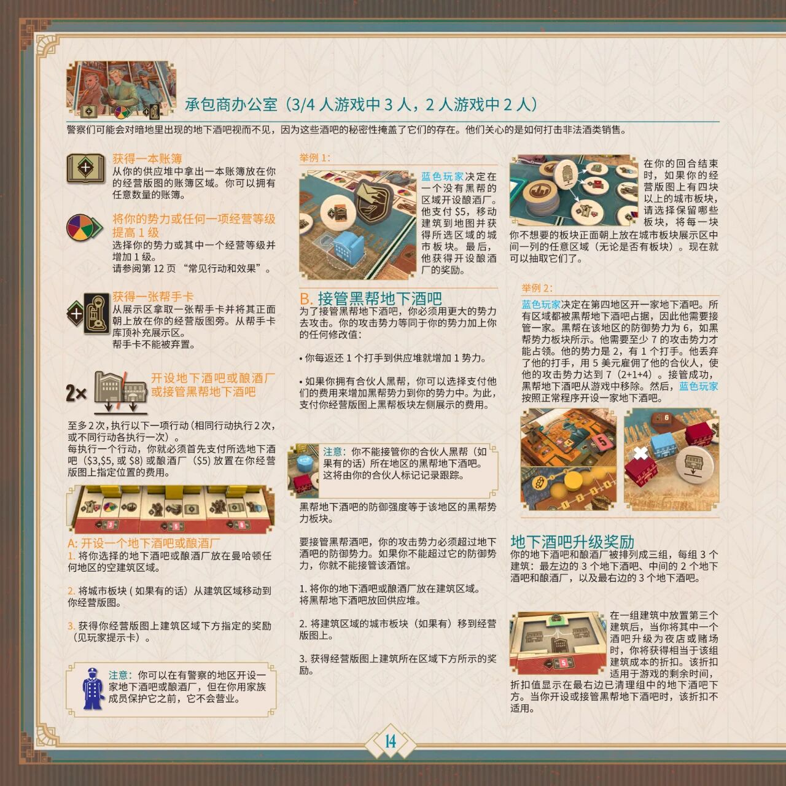
承包商办公室（3/4 人游戏中 3 人，2 人游戏中 2 人）
〔图 承包商办公室地点插画与小图标〕
警察们可能会对暗地里出现的地下酒吧视而不见，因为这些酒吧的秘密性掩盖了它们的存在。他们关心的是如何打击非法酒类销售。
获得一本账簿
〔图 账簿图标〕
从你的供应堆中拿出一本账簿放在你的经营版图的账簿区域。你可以拥有任意数量的账簿。
将你的势力或任何一项经营等级提高 1 级
〔图 势力转盘与箭头图标〕
选择你的势力或其中一个经营等级并增加 1 级。
请参阅第 12 页"常见行动和效果"。
获得一张帮手卡
〔图 帮手卡图标〕
从展示区拿取一张帮手卡并将其正面朝上放在你的经营版图旁。从帮手卡库顶补充展示区。
帮手卡不能被弃置。
开设地下酒吧或酿酒厂或接管黑帮地下酒吧
〔图 2× 与建筑图标〕
至多 2 次，执行以下一项行动（相同行动执行 2 次，或不同行动各执行一次）。
每执行一个行动，你就必须首先支付所选地下酒吧（$3,$5, 或 $8）或酿酒厂（$5）放置在你经营版图上指定位置的费用。
〔图 照片，经营版图建筑区域展示 $3/$5/$8 费用格与图标〕
A: 开设一个地下酒吧或酿酒厂
1. 将你选择的地下酒吧或酿酒厂放在曼哈顿任何地区的空建筑区域。
2. 将城市板块（如果有）从建筑区域移动到你经营版图。
3. 获得你经营版图上建筑区域下方指定的奖励（见玩家提示卡）。
注意：你可以在有警察的地区开设一家地下酒吧或酿酒厂，但在你用家族成员保护它之前，它不会营业。〔图 警察立绘〕
B. 接管黑帮地下酒吧
为了接管黑帮地下酒吧，你必须用更大的势力去攻击。你的攻击势力等同于你的势力加上你的任何修改值：
- 你每返还 1 个打手到供应堆就增加 1 势力。
- 如果你拥有合伙人黑帮，你可以选择支付他们的费用来增加黑帮势力到你的势力中。为此，支付你经营版图上黑帮板块左侧展示的费用。
注意：你不能接管你的合伙人黑帮（如果有）所在地区的黑帮地下酒吧。这将由你的合伙人标记记录跟踪。〔图 照片，蓝色八角棋子与红色建筑〕
黑帮地下酒吧的防御强度等于该地区的黑帮势力板块。
要接管黑帮酒吧，你的攻击势力必须超过地下酒吧的防御势力。如果你不能超过它的防御势力，你就不能接管该酒馆。〔原文如此〕
1. 将你的地下酒吧或酿酒厂放在建筑区域。将黑帮地下酒吧放回供应堆。
2. 将建筑区域的城市板块（如果有）移到经营版图上。
3. 获得经营版图上建筑所在区域下方所示的奖励。
举例 1:
〔图 照片，酿酒厂建筑圆片与保护图标放在主版图地区上〕
蓝色玩家决定在一个没有黑帮的区域开设酿酒厂。他支付 $5，移动建筑到地图并获得所选区域的城市板块。最后，他获得开设酿酒厂的奖励。
举例 2:
蓝色玩家决定在第四地区开一家地下酒吧。所有区域都被黑帮地下酒吧占据，因此他需要接管一家。黑帮在该地区的防御势力为 6，如黑帮势力板块所示。他需要至少 7 的攻击势力才能占领。他的势力是 2，有 1 个打手。他丢弃了他的打手，用 5 美元雇佣了他的合伙人，使他的攻击势力达到 7（2+1+4）。接管成功，黑帮地下酒吧从游戏中移除。然后，蓝色玩家按照正常程序开设一家地下酒吧。
〔图 两张照片，展示主版图地区与黑帮势力板块、被移除的黑帮地下酒吧〕
在你的回合结束时，如果你的经营版图上有四块以上的城市板块，请选择保留哪些板块，将每一块你不想要的板块正面朝上放在城市板块展示区中间一列的任意区域（无论是否有板块）。现在就可以抽取它们了。
〔图 照片，城市板块展示区与板块圆片、箭头指示〕
地下酒吧升级奖励
你的地下酒吧和酿酒厂被排列成三组，每组 3 个建筑：最左边的 3 个地下酒吧、中间的 2 个地下酒吧和酿酒厂，以及最右边的 3 个地下酒吧。
〔图 照片，经营版图一组建筑区域与折扣标记 5〕
在一组建筑中放置第三个建筑后，当你将其中一个酒吧升级为夜店或赌场时，你将获得相当于该组建筑成本的折扣。该折扣适用于游戏的剩余时间，折扣值显示在最右边已清理组中的地下酒吧下方。当你开设或接管黑帮地下酒吧时，该折扣不适用。
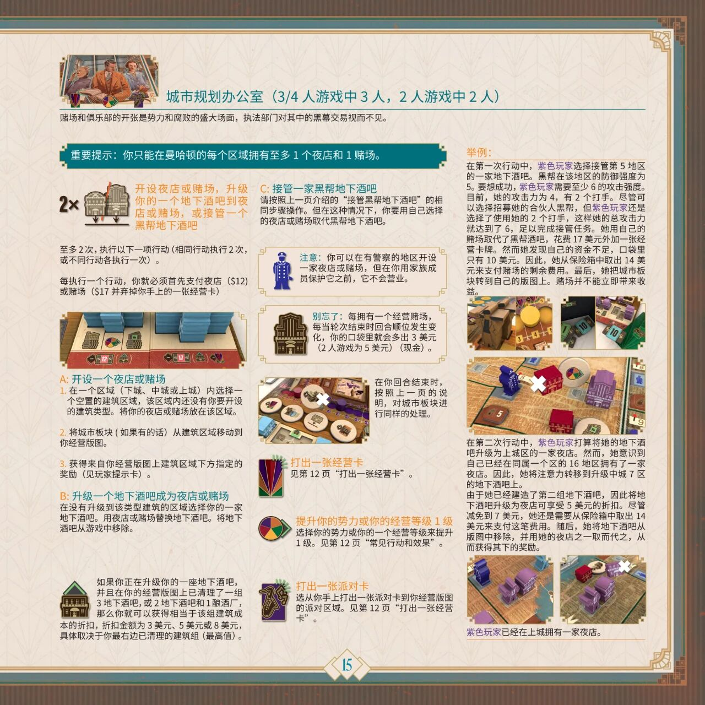
〔图 左上角一张三人看报纸的插画照片，旁有小游戏图标〕
城市规划办公室（3/4 人游戏中 3 人，2 人游戏中 2 人）
赌场和俱乐部的开张是势力和腐败的盛大场面，执法部门对其中的黑幕交易视而不见。
〔提示框〕重要提示：你只能在曼哈顿的每个区域拥有至多 1 个夜店和 1 赌场。〔原文如此："1 赌场"前无"个"〕
行动说明（左栏）
2× 〔图 两栋建筑图标带向下箭头〕
开设夜店或赌场，升级你的一个地下酒吧到夜店或赌场，或接管一个黑帮地下酒吧
至多 2 次，执行以下一项行动（相同行动执行 2 次，或不同行动各执行一次）。
每执行一个行动，你就必须首先支付夜店（$12）或赌场（$17）并弃掉你手上的一张经营卡）
〔图 版图照片，展示摆放建筑模型的区域〕
A: 开设一个夜店或赌场
1. 在一个区域（下城、中城或上城）内选择一个空置的建筑区域，该区域内还没有你要开设的建筑类型。将你的夜店或赌场放在该区域。
2. 将城市板块（如果有的话）从建筑区域移动到你经营版图。
3. 获得来自你经营版图上建筑区域下方指定的奖励（见玩家提示卡）。
B: 升级一个地下酒吧成为夜店或赌场
在没有升级到该类型建筑的区域选择你的一家地下酒吧。用夜店或赌场替换地下酒吧。将地下酒吧从游戏中移除。
〔图 建筑图标〕如果你正在升级你的一座地下酒吧，并且在你的经营版图上已清理了一组 3 地下酒吧，或 2 地下酒吧和 1 酿酒厂，那么你就可以获得相当于该组建筑成本的折扣，折扣金额为 3 美元、5 美元或 8 美元，具体取决于你最右边已清理的建筑组（最高值）。
行动说明（中栏）
C: 接管一家黑帮地下酒吧
请按照上一页介绍的"接管黑帮地下酒吧"的相同步骤操作。但在这种情况下，你要用自己选择的夜店或赌场取代黑帮地下酒吧。
〔提示框〕〔图 警察棋子图标〕注意：你可以在有警察的地区开设一家夜店或赌场，但在你用家族成员保护它之前，它不会营业。
〔提示框〕〔图 建筑图标〕别忘了：每拥有一个经营赌场，每当轮次结束时回合顺位发生变化，你的口袋里就会多出 3 美元（2 人游戏为 5 美元）（现金）。
〔图 版图照片〕在你回合结束时，按照上一页的说明，对城市板块进行同样的处理。
打出一张经营卡
见第 12 页"打出一张经营卡"。
提升你的势力或你的经营等级 1 级
〔图 彩色扇形图标〕选择你的势力或你的一个经营等级来提升 1 级。见第 12 页"常见行动和效果"。
打出一张派对卡
〔图 萨克斯图案的派对卡〕选从你手上打出一张派对卡到你经营版图的派对区域。见第 12 页"打出一张经营卡"。〔原文如此："选从你手上"〕
举例：
在第一次行动中，紫色玩家选择接管第 5 地区的一家地下酒吧。黑帮在该地区的防御强度为 5。要想成功，紫色玩家需要至少 6 的攻击强度。目前，她的攻击力为 4，有 2 个打手。尽管可以选择招募她的合伙人黑帮，但紫色玩家还是选择了使用她的 2 个打手，这样她的总攻击力就达到了 6，足以完成接管任务。她用自己的赌场取代了黑帮酒吧，花费 17 美元外加一张经营卡牌。然而她发现自己的资金不足，口袋里只有 10 美元。因此，她从保险箱中取出 14 美元来支付赌场的剩余费用。最后，她把城市板块转到自己的版图上。赌场并不能立即带来收益。
〔图 两张版图局部照片，展示赌场板块与金钱支付〕
在第二次行动中，紫色玩家打算将她的地下酒吧升级为上城区的一家夜店。然而，她意识到自己已经在同属一个区的 16 地区拥有了一家夜店。因此，她将注意力转移到升级中城 7 区的地下酒吧上。
由于她已经建造了第二组地下酒吧，因此将地下酒吧升级为夜店可享受 5 美元的折扣。尽管减免到 7 美元，她还是需要从保险箱中取出 14 美元来支付这笔费用。随后，她将地下酒吧从版图中移除，并用她的夜店之一取而代之，从而获得其下的奖励。
〔图 两张版图局部照片，展示紫色地下酒吧被夜店模型取代〕
紫色玩家已经在上城拥有一家夜店。
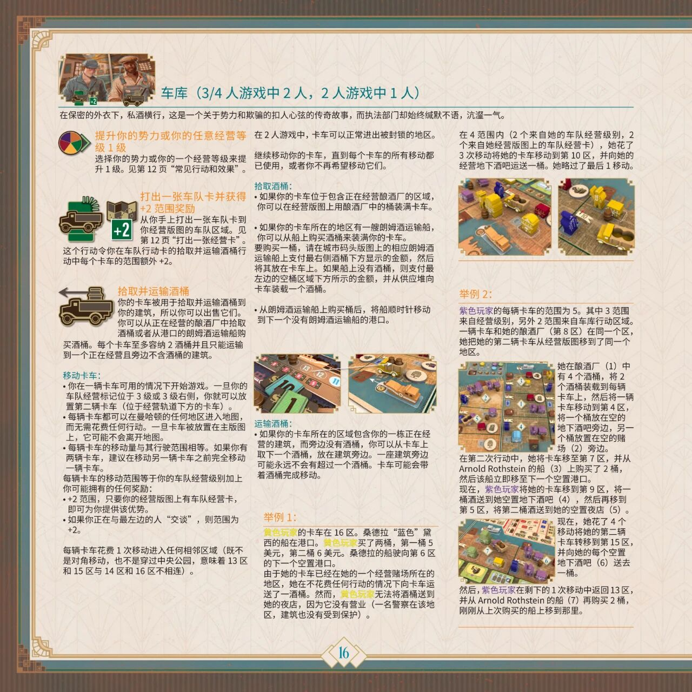
〔图 左上角两名工人（司机）的插画照片，旁有卡车与"+2"图标〕
车库（3/4 人游戏中 2 人，2 人游戏中 1 人）
在保密的外衣下，私酒横行，这是一个关于势力和欺骗的扣人心弦的传奇故事，而执法部门却始终缄默不语，沆瀣一气。
行动说明（左栏）
〔图 彩色扇形图标〕提升你的势力或你的任意经营等级 1 级
选择你的势力或你的一个经营等级来提升 1 级。见第 12 页"常见行动和效果"。
〔图 卡车与地图板块"+2"图标〕打出一张车队卡并获得 +2 范围奖励
从你手上打出一张车队卡到你经营版图的车队区域。见第 12 页"打出一张经营卡"。
这个行动令你在车队行动卡的拾取并运输酒桶行动中每个卡车的范围额外 +2。
〔图 卡车与酒桶图标〕拾取并运输酒桶
你的卡车被用于拾取并运输酒桶到你的建筑，所以你可以出售它们。你可以从正在经营的酿酒厂中拾取酒桶或者从港口的朗姆酒运输船购买酒桶。每个卡车至多容纳 2 酒桶并且只能运输到一个正在经营且旁边不含酒桶的建筑。
移动卡车：
• 你在一辆卡车可用的情况下开始游戏。一旦你的车队经营标记位于 3 级或 3 级右侧，你就可以放置第二辆卡车（位于经营轨道下方的卡车）。
• 每辆卡车都可以在曼哈顿的任何地区进入地图，而无需花费任何行动。一旦卡车被放置在主版图上，它可能不会离开地图。
• 每辆卡车的移动量与其行驶范围相等。如果你有两辆卡车，建议在移动另一辆卡车之前完全移动一辆卡车。
每辆卡车的移动范围等于你的车队经营级别加上你可能拥有的任何奖励：
• +2 范围，只要你的经营版图上有车队经营卡，即可为你提供该优势。
• 如果你正在与最左边的人"交谈"，则范围为 +2。
每辆卡车花费 1 次移动进入任何相邻区域（既不是对角移动，也不是穿过中央公园，意味着 13 区和 15 区与 14 区和 16 区不相连）。
行动说明（中栏）
在 2 人游戏中，卡车可以正常进出被封锁的地区。
继续移动你的卡车，直到每个卡车的所有移动都已使用，或者你不再希望移动它们。
拾取酒桶：
• 如果你的卡车位于包含正在经营酿酒厂的区域，你可以在经营版图上用酿酒厂中的桶装满卡车。
• 如果你的卡车所在的地区有一艘朗姆酒运输船，你可以从船上购买酒桶来装满你的卡车。
要购买一桶，请在城市码头版图上的相应朗姆酒运输船上支付最右侧酒桶下方显示的金额，然后将其放在卡车上。如果船上没有酒桶，则支付最左边的空桶区域下方所示的金额，并从供应堆向卡车装载一个酒桶。
• 从朗姆酒运输船上购买桶后，将船顺时针移动到下一个没有朗姆酒运输船的港口。
〔图 两张版图照片，展示码头版图上的价钱槽与卡车、船只模型〕
运输酒桶：
• 如果你的卡车所在的区域包含你的一栋正在经营的建筑，而旁边没有酒桶，你可以从卡车上取下一个酒桶，放在建筑旁边。一座建筑旁边可能永远不会有超过一个酒桶。卡车可能会带着酒桶完成移动。
举例 1:
黄色玩家的卡车在 16 区。桑德拉"蓝色"黛西的船在港口。黄色玩家买了两桶，第一桶 5 美元，第二桶 6 美元。桑德拉的船驶向第 6 区的下一个空置港口。
由于她的卡车已经在她的一个经营赌场所在的地区，她在不花费任何行动的情况下向卡车运送了一酒桶〔原文如此〕。然而，黄色玩家无法将酒桶送到她的夜店，因为它没有营业（一名警察在该地区，建筑也没有受到保护）。
行动说明（右栏）
（承接举例 1）在 4 范围内（2 个来自她的车队经营级别，2 个来自她经营版图上的车队经营卡），她花了 3 次移动将她的卡车移动到第 10 区，并向她的经营地下酒吧运送一桶。她略过了最后 1 移动。
〔图 两张版图照片，展示黄色卡车与建筑模型、酒桶摆放〕
举例 2:
紫色玩家的每辆卡车的范围为 5。其中 3 范围来自经营级别，另外 2 范围来自车库行动区域。一辆卡车和她的酿酒厂（第 8 区）在同一个区，她把她的第二辆卡车从经营版图移到了同一个地区。
〔图 版图照片，带 1-7 编号标记〕
她在酿酒厂（1）中有 4 个酒桶，将 2 个酒桶装载到每辆卡车上，然后将一辆卡车移动到第 4 区，将一个桶放在空的地下酒吧旁边，另一个桶放置在空的赌场（2）旁边。
在第二次行动中，她将卡车移至第 7 区，并从 Arnold Rothstein 的船（3）上购买了 2 桶，然后该船立即移至下一个空置港口。
现在，紫色玩家将她的卡车移到第 9 区，将一桶酒送到她空置地下酒吧（4），然后再移到第 5 区，将第二桶酒送到她的空置夜店（5）。
现在，她花了 4 个移动将她的第二辆卡车转移到第 15 区，并向她的每个空置地下酒吧（6）送去一桶。
然后，紫色玩家在剩下的 1 次移动中返回 13 区，并从 Arnold Rothstein 的船（7）再购买 2 桶，刚刚从上次购买的船上移到那里。
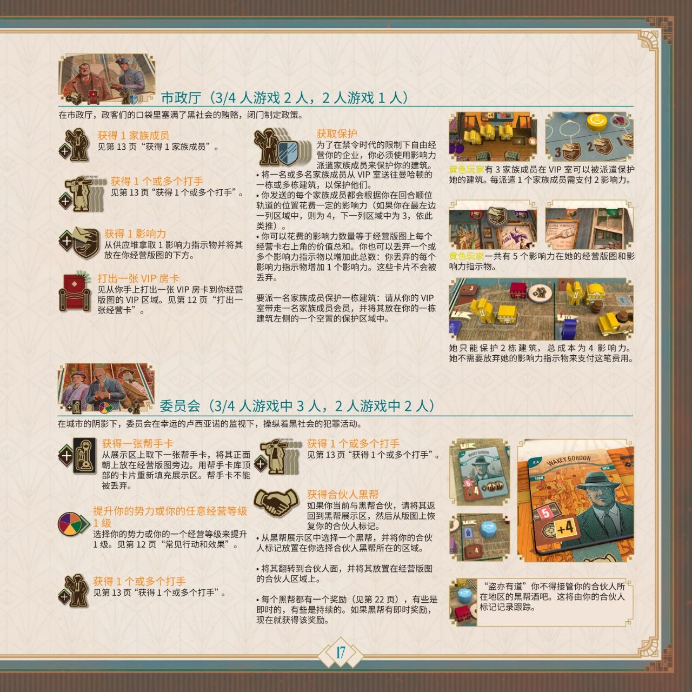
市政厅（3/4 人游戏 2 人，2 人游戏 1 人）
〔图 政客与警察交谈的插画，左下角有一排行动图标〕
在市政厅，政客们的口袋里塞满了黑社会的贿赂，闭门制定政策。
获得 1 家族成员
见第 13 页"获得 1 家族成员"。
获得 1 个或多个打手
见第 13 页"获得 1 个或多个打手"。
获得 1 影响力
从供应堆拿取 1 影响力指示物并将其放在你经营版图的下方。
打出一张 VIP 房卡
见从你手上打出一张 VIP 房卡到你经营版图的 VIP 区域。见第 12 页"打出一张经营卡"。〔原文如此："见从你手上打出……"语句不通〕
获取保护
为了在禁令时代的限制下自由经营你的企业，你必须使用影响力派遣家族成员来保护你的建筑。
- 将一名或多名家族成员从 VIP 室送往曼哈顿的一栋或多栋建筑，以保护他们。
- 你发送的每个家族成员都会根据你在回合顺位轨道的位置花费一定的影响力（如果你在最左边一列区域中，则为 4，下一列区域中为 3，依此类推）。
- 你可以花费的影响力数量等于经营版图上每个经营卡右上角的价值总和。你也可以丢弃一个或多个影响力指示物以增加此总数：你丢弃的每个影响力指示物增加 1 个影响力。这些卡片不会被丢弃。
要派一名家族成员保护一栋建筑：请从你的 VIP 室带走一名家族成员会员，并将其放在你的一栋建筑左侧的一个空置的保护区域中。〔原文如此："家族成员会员"疑衍字〕
〔图 两张照片——经营版图 VIP 区上的黄色家族成员米宝、回合顺位轨道与盾牌费用标记〕
黄色玩家有 3 家族成员在 VIP 室可以被派遣保护她的建筑。每派遣 1 个家族成员需支付 2 影响力。〔原文如此："有 3 家族成员"疑漏"个"〕
〔图 两张照片——建筑卡上的保护盾标记、带有钢琴海报与证书的建筑内部〕
黄色玩家一共有 5 个影响力在她的经营版图和影响力指示物。
〔图 版图照片——黄色与红色家族成员米宝及卡车、蓝色米宝保护建筑〕
她只能保护 2 栋建筑，总成本为 4 影响力。她不需要放弃她的影响力指示物来支付这笔费用。
委员会（3/4 人游戏中 3 人，2 人游戏中 2 人）
〔图 三名男子（委员会成员）站立的插画，左下角有行动图标〕
在城市的阴影下，委员会在幸运的卢西亚诺的监视下，操纵着黑社会的犯罪活动。
获得一张帮手卡
从展示区上取下一张帮手卡，将其正面朝上放在经营版图旁边。用帮手卡库顶部的卡片重新填充展示区。帮手卡不能被丢弃。
提升你的势力或你的任意经营等级 1 级
选择你的势力或你的一个经营等级来提升 1 级。见第 12 页"常见行动和效果"。
获得 1 个或多个打手
见第 13 页"获得 1 个或多个打手"。
获得 1 个或多个打手
见第 13 页"获得 1 个或多个打手"。（此条目在页面中栏顶部重复出现一次）
获得合伙人黑帮
如果你当前与黑帮合伙，请将其返回到黑帮展示区，然后从版图上恢复你的合伙人标记。
- 从黑帮展示区中选择一个黑帮，并将你的合伙人标记放置在你选择合伙人黑帮所在的区域。
- 将其翻转到合伙人面，并将其放置在经营版图的合伙人区域上。
- 每个黑帮都有一个奖励（见第 22 页），有些是即时的，有些是持续的。如果黑帮有即时奖励，现在就获得该奖励。
〔图 两张照片——版图上的帮手卡与蓝色合伙人标记；右侧"WAXEY GORDON"黑帮卡牌特写（卡面英文数字不转录）〕
"盗亦有道"你不得接管你的合伙人所在地区的黑帮酒吧。这将由你的合伙人标记记录跟踪。
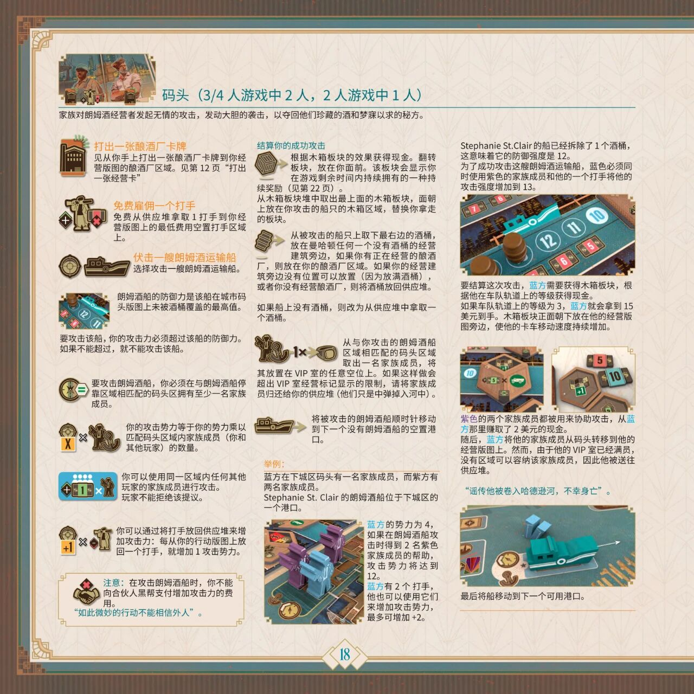
码头（3/4 人游戏中 2 人，2 人游戏中 1 人）
〔图 两名码头工人与背景中货船的插画，左下角有行动图标〕
家族对朗姆酒经营者发起无情的攻击，发动大胆的袭击，以夺回他们珍藏的酒和梦寐以求的秘方。
打出一张酿酒厂卡牌
见从你手上打出一张酿酒厂卡牌到你经营版图的酿酒厂区域。见第 12 页"打出一张经营卡"〔原文如此："见从你手上打出……"语句不通；句末引号后无句号〕
免费雇佣一个打手
免费从供应堆拿取 1 打手到你经营版图上的最低费用空置打手区域上。〔原文如此："1 打手"疑漏"个"〕
伏击一艘朗姆酒运输船
选择攻击一艘朗姆酒运输船。
〔图 照片——码头版图轨道上的朗姆酒船模型、数字 12 与酒桶标记〕
朗姆酒船的防御力是该船在城市码头版图上未被酒桶覆盖的最高值。
要攻击该船，你的攻击力必须超过该船的防御力。如果不能超过，就不能攻击该船。
〔图标：罗盘＋等号〕要攻击朗姆酒船，你必须在与朗姆酒船停靠区域相匹配的码头区拥有至少一名家族成员。
〔图标：X×家族成员〕你的攻击势力等于你的势力乘以匹配码头区域内家族成员（你和其他玩家）的数量。
〔图标：＋1 美元×家族成员〕你可以使用同一区域内任何其他玩家的家族成员进行攻击。玩家不能拒绝该提议。
〔图标：＋1×打手〕你可以通过将打手放回供应堆来增加攻击力：每从你的行动版图上放回一个打手，就增加 1 攻击势力。
〔注意框，配握手与叉号图标〕注意：在攻击朗姆酒船时，你不能向合伙人黑帮支付增加攻击力的费用。
"如此微妙的行动不能相信外人"。
结算你的成功攻击
〔图标：木箱板块〕根据木箱板块的效果获得现金。翻转板块，放在你面前。该板块会显示你在游戏剩余时间内持续拥有的一种持续奖励（见第 22 页）。
从木箱板块堆中取出最上面的木箱板块，面朝上放在你攻击的船只的木箱区域，替换你拿走的板块。
〔图标：酒桶〕从被攻击的船只上取下最右边的酒桶，放在曼哈顿任何一个没有酒桶的经营建筑旁边，如果你有正在经营的酿酒厂，则放在你的酿酒厂区域。如果你的经营建筑旁边没有位置可以放置（因为放满酒桶），或者你没有经营酿酒厂，则将酒桶放回供应堆。
如果船上没有酒桶，则改为从供应堆中拿取一个酒桶。
〔图标：家族成员 1× 美元〕从与你攻击的朗姆酒船区域相匹配的码头区域取出一名家族成员，将其放置在 VIP 室的任意空位上。如果这样做会超出 VIP 室经营标记显示的限制，请将家族成员归还给你的供应堆（他们只是中弹掉入河中）。
〔图标：船只〕将被攻击的朗姆酒船顺时针移动到下一个没有朗姆酒船的空置港口。
举例：
蓝方在下城区码头有一名家族成员，而紫方有两名家族成员。
Stephanie St. Clair 的朗姆酒船位于下城区的一个港口。
〔图 照片——码头版图上蓝紫两色家族成员米宝〕
蓝方的势力为 4，如果在朗姆酒船攻击时得到 2 名紫色家族成员的帮助，攻击势力将达到 12。
蓝方有 2 个打手，他也可以使用它们来增加攻击势力，最多可增加 +2。
〔右栏示例续〕
Stephanie St.Clair 的船已经拆除了 1 个酒桶，这意味着它的防御强度是 12。
为了成功攻击这艘朗姆酒运输船，蓝色必须同时使用紫色的家族成员和他的一个打手将他的攻击强度增加到 13。
〔图 照片——码头版图轨道，可见数字 10、11、12 与酒桶、红色钞票标记〕
要结算这次攻击，蓝方需要获得木箱板块，根据他在车队轨道上的等级获得现金。
如果车队轨道上的等级为 3，蓝方就会拿到 15 美元到手。〔原文如此："拿到 15 美元到手"语义重复〕木箱板块正面朝下放在他的经营版图旁边，使他的卡车移动速度持续增加。
〔图 两张照片——六边形木箱板块（一侧印有现金与卡车图标）及板块堆（5、10 面值）〕
紫色的两个家族成员都被用来协助攻击，从蓝方那里赚取了 2 美元的现金。
随后，蓝方将他的家族成员从码头转移到他的经营版图上。然而，由于他的 VIP 室已经满员，没有区域可以容纳该家族成员，因此他被送往供应堆。
"谣传他被卷入哈德逊河，不幸身亡"。
〔图 照片——蓝绿色朗姆酒船模型在码头版图上，白色箭头指向下一港口〕
最后将船移动到下一个可用港口。
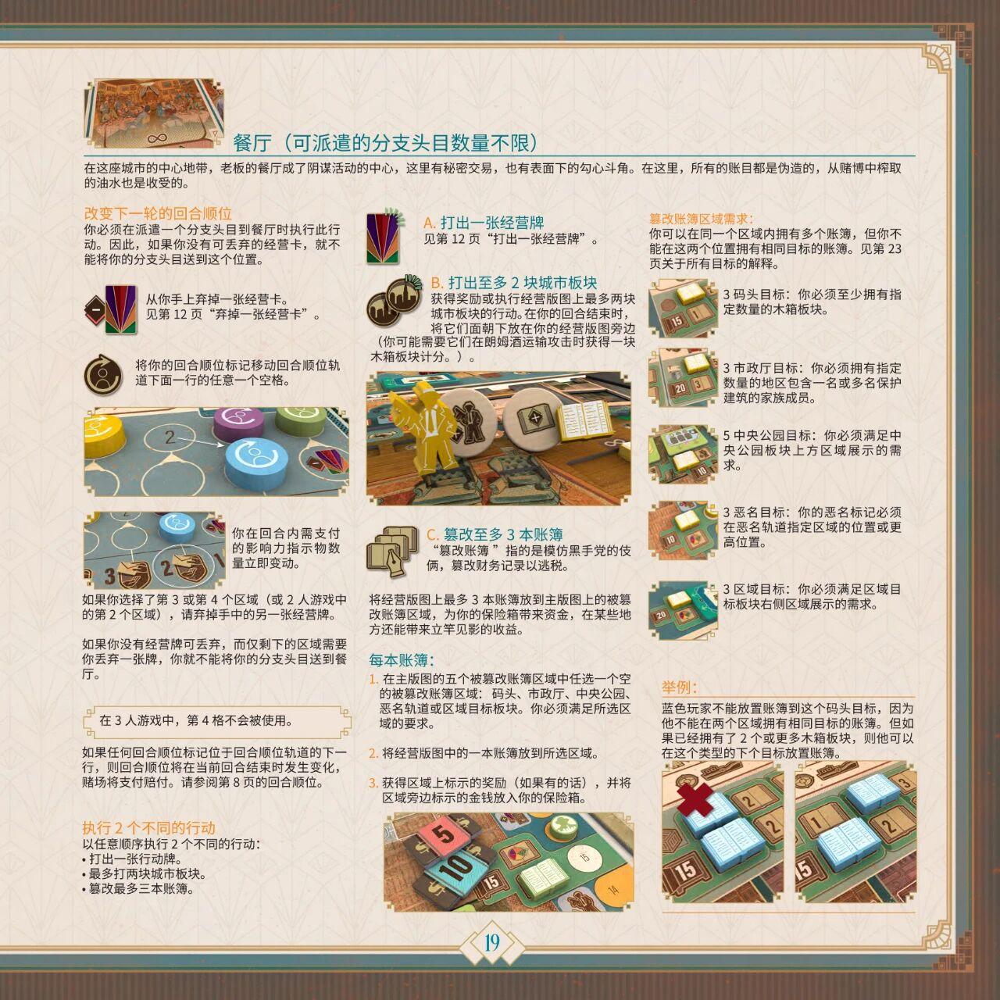
〔图 餐厅卡牌插画，卡面左下有 ∞ 符号〕
餐厅（可派遣的分支头目数量不限）
在这座城市的中心地带，老板的餐厅成了阴谋活动的中心，这里有秘密交易，也有表面下的勾心斗角。在这里，所有的账目都是伪造的，从赌博中榨取的油水也是收受的。
改变下一轮的回合顺位
你必须在派遣一个分支头目到餐厅时执行此行动。因此，如果你没有可丢弃的经营卡，就不能将你的分支头目送到这个位置。
〔图 弃牌图标〕从你手上弃掉一张经营卡。
见第 12 页"弃掉一张经营卡"。
〔图 循环箭头图标〕将你的回合顺位标记移动回合顺位轨道下面一行的任意一个空格。〔原文如此：疑漏"到"字〕
〔图 回合顺位轨道照片，蓝色标记从数字 2 格移到下一行空格〕
〔图 收入轨道照片，数字 3、2 上有手套标志〕你在回合内需支付的影响力指示物数量立即变动。
如果你选择了第 3 或第 4 个区域（或 2 人游戏中的第 2 个区域），请弃掉手中的另一张经营牌。
如果你没有经营牌可丢弃，而仅剩下的区域需要你丢弃一张牌，你就不能将你的分支头目送到餐厅。
〔方框内〕在 3 人游戏中，第 4 格不会被使用。
如果任何回合顺位标记位于回合顺位轨道的下一行，则回合顺位将在当前回合结束时发生变化，赌场将支付赔付。请参阅第 8 页的回合顺位。
执行 2 个不同的行动
以任意顺序执行 2 个不同的行动：
- 打出一张行动牌。
- 最多打两块城市板块。
- 篡改最多三本账簿。
A. 打出一张经营牌
见第 12 页"打出一张经营牌"。
B. 打出至多 2 块城市板块
获得奖励或执行经营版图上最多两块城市板块的行动。在你的回合结束时，将它们面朝下放在你的经营版图旁边（你可能需要它们在朗姆酒运输攻击时获得一块木箱板块计分。）。
〔图 黄色分支头目人偶、账簿指示物与经营版图照片〕
C. 篡改至多 3 本账簿
"篡改账簿"指的是模仿黑手党的伎俩，篡改财务记录以逃税。
将经营版图上最多 3 本账簿放到主板图上的被篡改账簿区域，为你的保险箱带来资金，在某些地方还能带来立竿见影的收益。
每本账簿：
1. 在主版图的五个被篡改账簿区域中任选一个空的被篡改账簿区域：码头、市政厅、中央公园、恶名轨道或区域目标板块。你必须满足所选区域的要求。
2. 将经营版图中的一本账簿放到所选区域。
3. 获得区域上标示的奖励（如果有的话），并将区域旁边标示的钱币放入你的保险箱。
〔图 码头区域账簿摆放照片，可见数字 5、10、15、15 的账簿格〕
篡改账簿区域需求：
你可以在同一个区域内拥有多个账簿，但你不能在这两个位置拥有相同目标的账簿。见第 23 页关于所有目标的解释。〔原文如此："这两个位置"〕
〔图 码头目标板块照片，数字 15、1〕3 码头目标：你必须至少拥有指定数量的木箱板块。
〔图 市政厅目标板块照片，数字 20、3〕3 市政厅目标：你必须拥有指定数量的地区包含一名或多名保护建筑的家族成员。
〔图 中央公园目标板块照片，数字 10〕5 中央公园目标：你必须满足中央公园板块上方区域展示的需求。
〔图 恶名轨道目标照片，数字 10〕3 恶名目标：你的恶名标记必须在恶名轨道指定区域的位置或更高位置。
〔图 区域目标板块照片〕3 区域目标：你必须满足区域目标板块右侧区域展示的需求。
举例：
蓝色玩家不能放置账簿到这个码头目标，因为他不能在两个区域拥有相同目标的账簿。但如果已经拥有了 2 个或更多木箱板块，则他可以在这个类型的下个目标放置账簿。
〔图 两张码头目标区对比照片，左图账簿放置处有红色叉号，右图账簿放在 15、1、2、3 的格子中〕
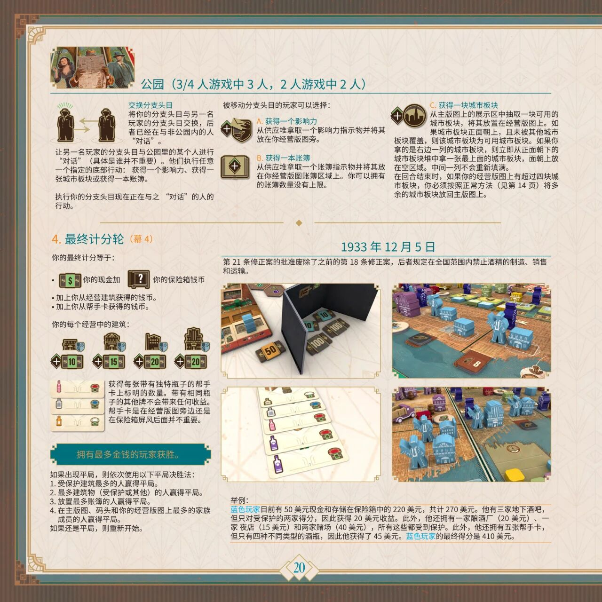
〔图 公园卡牌插画，画面中有人物与文件〕
公园（3/4 人游戏中 3 人，2 人游戏中 2 人）
〔图 两个分支头目人偶图标，中间有双向箭头〕
交换分支头目
将你的分支头目与另一名玩家的分支头目交换，后者已经在与非公园内的人"对话"。
让另一名玩家的分支头目与公园里的某个人进行"对话"（具体是谁并不重要）。他们执行任意一个指定的底部行动：获得一个影响力、获得一张城市板块或获得一本账簿。
执行你的分支头目现在正在与之"对话"的人的行动。
被移动分支头目的玩家可以选择：
〔图 影响力图标〕A. 获得一个影响力
从供应堆拿取一个影响力指示物并将其放在你经营版图旁。
〔图 账簿图标〕B. 获得一本账簿
从供应堆拿取一个账簿指示物并将其放在你经营版图账簿区域上。你可以拥有的账簿数量没有上限。
〔图 城市板块图标〕C. 获得一块城市板块
从主版图上的展示区中抽取一块可用的城市板块，将其放置在经营版图上。如果城市板块正面朝上，且未被其他城市板块覆盖，则该城市板块为可用城市板块。如果你拿的是右边一列的城市板块，则立即从正面朝下的城市板块堆中拿一张最上面的城市板块，面朝上放在空区域。中间一列不会重新填满。
在回合结束时，如果你的经营版图上有超过四块城市板块，你必须按照正常方法（见第 14 页）将多余的城市板块放回主版图上。
4. 最终计分轮（第 4）
你的最终计分等于：
- 〔图 现金钞票图标〕你的现金加〔图 保险箱问号图标〕你的保险箱钱币
- 加上你从经营建筑获得的钱币。
- 加上你从帮手卡获得的钱币。
你的每个经营中的建筑：
〔图 四种建筑图标，分别标 +10、+15、+20、+20，每个建筑旁有保护盾牌图标〕
〔图 三张帮手卡示意，分别带粉色、灰色、橙色酒瓶图标和绿色桌椅图标〕获得每张带有独特瓶子的帮手卡上标明的数量。带有相同瓶子的其他牌不会带来任何收益。帮手卡是在经营版图旁边还是在保险箱屏风后面并不重要。
〔绿色横幅〕拥有最多金钱的玩家获胜。
如果出现平局，则依次使用以下平局决胜法：
1. 受保护建筑最多的人赢得平局。
2. 最多建筑物（受保护或其他）的人赢得平局。
3. 放置最多账簿的人赢得平局。
4. 在主版图、码头和你的经营版图上最多的家族成员的人赢得平局。
如果还是平局，则重新开始。
1933 年 12 月 5 日
第 21 条修正案的批准废除了之前的第 18 条修正案，后者规定在全国范围内禁止酒精的制造、销售和运输。
〔图 保险箱屏风后现金照片，可见 50、100 面额钞票〕
〔图 城市版图上蓝色建筑与家族成员照片〕
〔图 屏风后帮手卡叠放照片，可见不同的酒瓶图标〕
〔图 蓝色家族成员与建筑照片〕
举例：
蓝色玩家目前有 50 美元现金和存储在保险箱中的 220 美元，共计 270 美元。他有三家地下酒吧，但只对受保护的两家得分，因此获得 20 美元收益。此外，他还拥有一家酿酒厂（20 美元）、一家夜店（15 美元）和两家赌场（40 美元），所有这些都受到保护。此外，他还拥有五张帮手卡，但只有四种不同类型的酒瓶，因此他获得了 45 美元。蓝色玩家的最终得分是 410 美元。
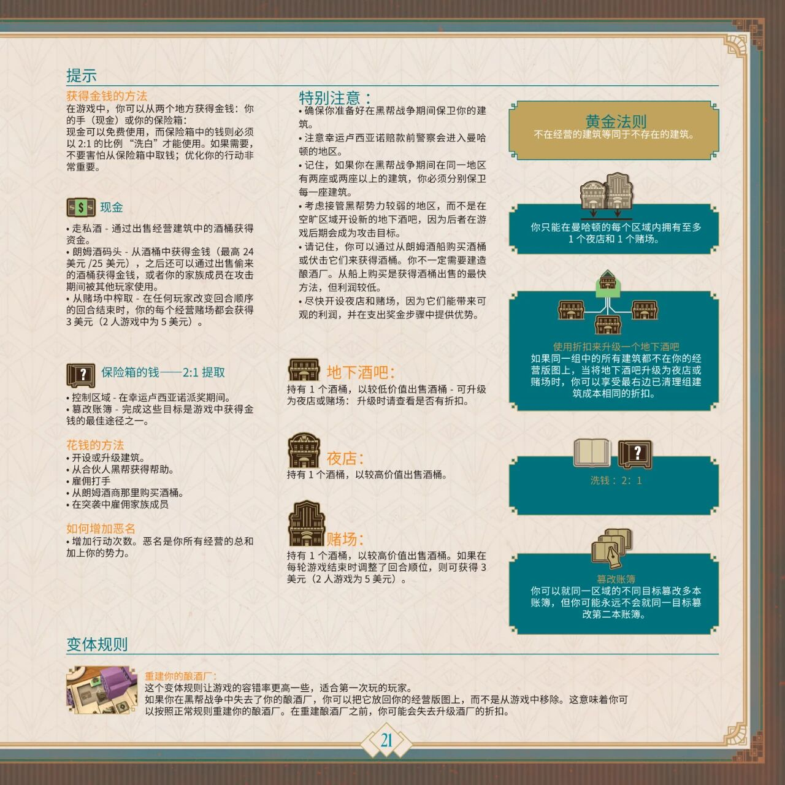
提示
获得金钱的方法
在游戏中，你可以从两个地方获得金钱：你的手（现金）或你的保险箱：
现金可以免费使用，而保险箱中的钱则必须以 2:1 的比例“洗白”才能使用。如果需要，不要害怕从保险箱中取钱；优化你的行动非常重要。
现金
〔图 绿色钞票图标〕
- 走私酒 - 通过出售经营建筑中的酒桶获得资金。
- 朗姆酒码头 - 从酒桶中获得金钱（最高 24 美元 /25 美元〔原文如此，间距奇怪〕），之后还可以通过出售偷来的酒桶获得金钱，或者你的家族成员在攻击期间被其他玩家使用。
- 从赌场中榨取 - 在任何玩家改变回合顺序的回合结束时，你的每个经营赌场都会获得 3 美元（2 人游戏中为 5 美元）。
保险箱的钱——2:1 提取
〔图 保险箱图标〕
- 控制区域 - 在幸运卢西亚诺派奖期间。
- 篡改账簿 - 完成这些目标是游戏中获得金钱的最佳途径之一。
花钱的方法
- 开设或升级建筑。
- 从合伙人黑帮获得帮助。
- 雇佣打手〔原文如此，句末无标点〕
- 从朗姆酒商那里购买酒桶。
- 在突袭中雇佣家族成员〔原文如此，句末无标点〕
如何增加恶名
- 增加行动次数。恶名是你所有经营的总和加上你的势力。
特别注意：
- 确保你准备好在黑帮战争期间保卫你的建筑。
- 注意幸运卢西亚诺赔款前警察会进入曼哈顿的地区。
- 记住，如果你在黑帮战争期间在同一地区有两座或两座以上的建筑，你必须分别保卫每一座建筑。
- 考虑接管黑帮势力较弱的地区，而不是在空旷区域开设新的地下酒吧，因为后者在游戏后期会成为攻击目标。
- 请记住，你可以通过从朗姆酒船购买酒桶或伏击它们来获得酒桶。你不一定需要建造酿酒厂。从船上购买是获得酒桶出售的最快方法，但利润较低。
- 尽快开设夜店和赌场，因为它们能带来可观的利润，并在支出奖金步骤中提供优势。
地下酒吧：
〔图 建筑图标〕
持有 1 个酒桶，以较低价值出售酒桶 - 可升级为夜店或赌场：升级时请查看是否有折扣。
夜店：
〔图 建筑图标〕
持有 1 个酒桶，以较高价值出售酒桶。
赌场：
〔图 建筑图标〕
持有 1 个酒桶，以较高价值出售酒桶。如果在每轮游戏结束时调整了回合顺位，则可获得 3 美元（2 人游戏为 5 美元）。
黄金法则（金色提示框）
不在经营的建筑等同于不存在的建筑。
〔图 提示框，两座建筑并排图标〕
你只能在曼哈顿的每个区域内拥有至多 1 个夜店和 1 个赌场。
〔图 提示框，一座绿色建筑连接另外三座建筑的示意图〕
使用折扣来升级一个地下酒吧
如果同一组中的所有建筑都不在你的经营版图上，当将地下酒吧升级为夜店或赌场时，你可以享受最右边已清理组建筑成本相同的折扣。
〔图 提示框，翻开的书本与保险箱图标〕
洗钱：2：1
〔图 提示框，账簿与钢笔图标〕
篡改账簿
你可以就同一区域的不同目标篡改多本账簿，但你可能永远不会就同一目标篡改第二本账簿。
变体规则
〔图 经营版图上紫色酿酒厂建筑的照片〕
重建你的酿酒厂：
这个变体规则让游戏的容错率更高一些，适合第一次玩的玩家。
如果你在黑帮战争中失去了你的酿酒厂，你可以把它放回你的经营版图上，而不是从游戏中移除。这意味着你可以按照正常规则重建你的酿酒厂。在重建酿酒厂之前，你可能会失去升级酒厂的折扣。
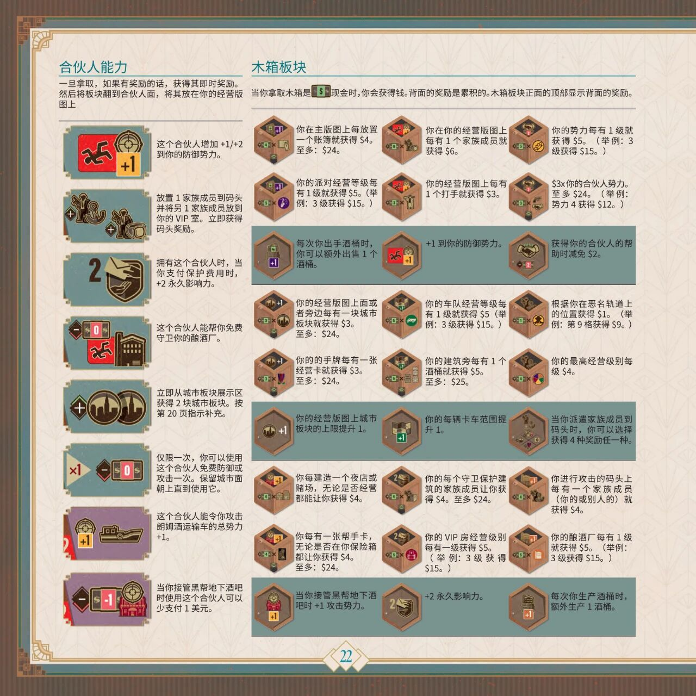
合伙人能力
一旦拿取，如果有奖励的话，获得其即时奖励。然后将板块翻到合伙人面，将其放在你的经营版图上〔原文如此，句末无标点〕
〔图 合伙人卡牌，打手与瞄准镜+1 图案〕这个合伙人增加 +1/+2 到你的防御势力。
〔图 合伙人卡牌，两名家族成员与锚、酒桶图案〕放置 1 家族成员到码头并将另 1 家族成员放到你的 VIP 室。立即获得码头奖励。
〔图 合伙人卡牌，数字 2 与递信封图案〕拥有这个合伙人时，当你支付保护费用时，+2 永久影响力。
〔图 合伙人卡牌，-0 钞票与逃跑打手、酿酒厂图案〕这个合伙人能帮你免费守卫你的酿酒厂。
〔图 合伙人卡牌，+ 与两枚城市徽章图案〕立即从城市板块展示区获得 2 块城市板块。按第 20 页指示补充。
〔图 合伙人卡牌，×1 箭头与 -0 钞票图案〕仅限一次，你可以使用这个合伙人免费防御或攻击一次。保留城市面朝上直到使用它。
〔图 合伙人卡牌，瞄准镜+1 与朗姆酒运输船图案〕这个合伙人能令你攻击朗姆酒运输车的总势力 +1。
〔图 合伙人卡牌，-1 钞票与瞄准镜、地下酒吧图案〕当你接管黑帮地下酒吧时使用这个合伙人可以少支付 1 美元。
木箱板块
当你拿取木箱是〔图 绿色钞票现金图标〕现金时，你会获得钱。背面的奖励是累积的。木箱板块正面的顶部显示背面的奖励。〔原文如此，"拿取木箱是……现金时"语句不通〕
以下为各木箱板块背面的奖励，按版面行序（每行从左到右）转录：
〔图 木箱板块，内有账簿+1 图案〕你在主版图上每放置一个账簿就获得 $4。至多：$24。
〔图 木箱板块，内有红卡+1、家族成员图案〕你在你的经营版图上每有 1 个家族成员就获得 $6。
〔图 木箱板块，内有打手与徽章图案〕你的势力每有 1 级就获得 $5。（举例：3 级获得 $15。）
〔图 木箱板块，内有紫卡+1 与派对图案〕你的派对经营等级每有1级就获得 $5。（举例：3 级获得 $15。）
〔图 木箱板块，内有打手图案〕你的经营版图上每有 1 个打手就获得 $3。
〔图 木箱板块，内有握手段落图案〕$3x你的合伙人势力。至多 $24。（举例：势力 4 获得 $12。）
〔图 木箱板块（青底行），内有钞票+1 图案〕每次你出手酒桶时，你可以额外出售 1 个酒桶。〔原文如此，"出手酒桶"疑为"出售"〕
〔图 木箱板块（青底行），内有红卡+1 与瞄准镜图案〕+1 到你的防御势力。
〔图 木箱板块（青底行），内有握手图案〕获得你的合伙人的帮助时减免 $2。
〔图 木箱板块，内有城市徽章+1 图案〕你的经营版图上面或者旁边每有一块城市板块就获得 $3。至多：$24。
〔图 木箱板块，内有卡车图案〕你的车队经营等级每有 1 级就获得 $5（举例：3 级获得 $15。）
〔图 木箱板块，内有恶名骷髅图案〕根据你在恶名轨道上的位置获得 $1。（举例：第 9 格获得 $9。）
〔图 木箱板块，内有城市徽章+1 与紫卡图案〕你的的手牌每有一张经营卡就获得 $3。至多：$24。〔原文如此，"的的"重复〕
〔图 木箱板块，内有酒桶图案〕你的建筑旁每有 1 个酒桶就获得 $5。至多：$25。
〔图 木箱板块，内有彩色转盘图案〕你的最高经营级别每级 $4。
〔图 木箱板块（青底行），内有城市上限+1 图案〕你的经营版图上城市板块的上限提升 1。
〔图 木箱板块（青底行），内有地图+1 图案〕你的每辆卡车范围提升 1。
〔图 木箱板块（青底行），内有码头图块图案〕当你派遣家族成员到码头时，你可以选择获得 4 种奖励任一种。
〔图 木箱板块，内有红卡+1 与建筑图案〕你每建造一个夜店或赌场，无论是否经营都能让你获得 $4。
〔图 木箱板块，内有守卫图案〕你的每个守卫保护建筑的家族成员让你获得 $4。至多 $24。
〔图 木箱板块，内有家族成员图案〕你进行攻击的码头上每有一个家族成员（你的或别人的）就获得 $4。
〔图 木箱板块，内有帮手卡图案〕你每有一张帮手卡，无论是否在你保险箱都让你获得 $4。至多：$24。
〔图 木箱板块，内有 VIP 图案〕你的 VIP 房经营级别每有一级获得 $5。（举例：3 级获得 $15。）
〔图 木箱板块，内有酿酒厂图案〕你的酿酒厂每有 1 级就获得 $5。（举例：3 级获得 $15。）
〔图 木箱板块（青底行），内有地下酒吧+1 图案〕当你接管黑帮地下酒吧时 +1 攻击势力。
〔图 木箱板块（青底行），内有 2 信封盾徽图案〕+2 永久影响力。
〔图 木箱板块（青底行），内有酿酒厂+1 图案〕每次你生产酒桶时，额外生产 1 酒桶。
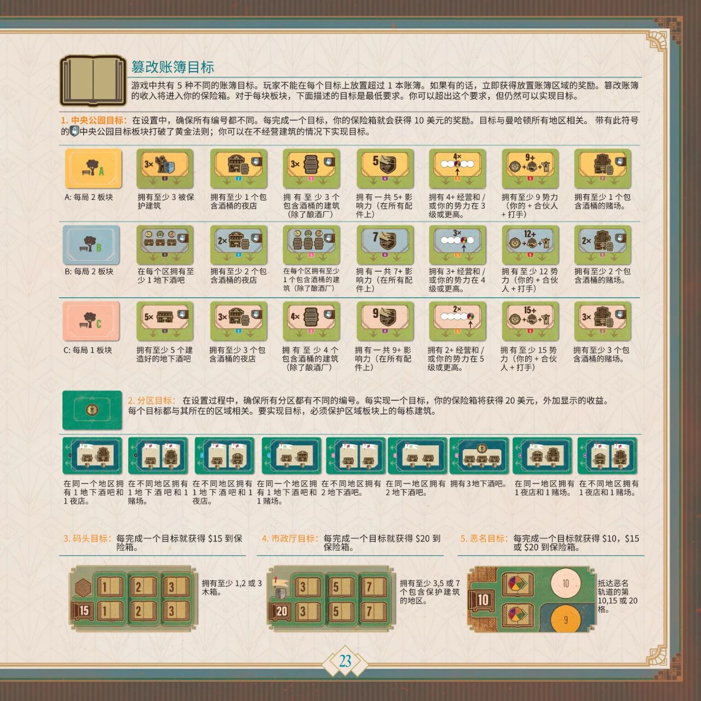
篡改账簿目标
〔图 摊开的书本图标〕
游戏中共有 5 种不同的账簿目标。玩家不能在每个目标上放置超过 1 本账簿。如果有的话，立即获得放置账簿区域的奖励。篡改账簿的收入将进入你的保险箱。对于每块板块，下面描述的目标是最低要求。你可以超出这个要求，但仍然可以实现目标。
1. 中央公园目标
在设置中，确保所有编号都不同。每完成一个目标，你的保险箱就会获得 10 美元的奖励。目标与曼哈顿所有地区相关。 带有此符号的〔图 小盾形符号〕中央公园目标板块打破了黄金法则；你可以在不经营建筑的情况下实现目标。
〔图 两排中央公园目标板块，每行左起第一块为行标，其余 7 块为目标板块，板上有编号标记与图案〕
A 行
- A: 每局 2 板块〔图 黄色公园板块，长椅与树〕
- 拥有至少 3 被保护建筑
- 拥有至少 1 个包含酒桶的夜店
- 拥有至少 3 个包含酒桶的建筑（除了酿酒厂）
- 拥有一共 5+ 影响力（在所有配件上）
- 拥有 4+ 经营和 / 或你的势力在 3 级或更高。
- 拥有至少 9 势力（你的 + 合伙人 + 打手）
- 拥有至少 1 个包含酒桶的赌场。
B 行
- B: 每局 2 板块〔图 蓝色公园板块，长椅与树〕
- 在每个区拥有至少 1 地下酒吧
- 拥有至少 2 个包含酒桶的夜店
- 在每个区拥有至少 1 个包含酒桶的建筑（除了酿酒厂）
- 拥有一共 7+ 影响力（在所有配件上）
- 拥有 3+ 经营和 / 或你的势力在 4 级或更高。
- 拥有至少 12 势力（你的 + 合伙人 + 打手）
- 拥有至少 2 个包含酒桶的赌场。
C 行
- C: 每局 1 板块〔图 粉色公园板块，长椅与树〕
- 拥有至少 5 个建造好的地下酒吧
- 拥有至少 3 个包含酒桶的夜店
- 拥有至少 4 个包含酒桶的建筑（除了酿酒厂）
- 拥有一共 9+ 影响力（在所有配件上）
- 拥有 2+ 经营和 / 或你的势力在 5 级或更高。
- 拥有至少 15 势力（你的 + 合伙人 + 打手）
- 拥有至少 3 个包含酒桶的赌场。
2. 分区目标
〔图 绿色分区目标板块，上有金色账簿圆片〕
在设置过程中，确保所有分区都有不同的编号。每实现一个目标，你的保险箱将获得 20 美元，外加显示的收益。每个目标都与其所在的区域相关。要实现目标，必须保护区域板块上的每栋建筑。
〔图 一排 9 块绿色分区目标板块，板上绘有建筑组合〕
- 在同一个地区拥有 1 地下酒吧和 1 夜店。
- 在不同地区拥有 1 地下酒吧和 1 赌场。
- 在不同地区拥有 1 地下酒吧和 1 夜店。
- 在同一个地区拥有 1 地下酒吧和 1 赌场。
- 在不同地区拥有 2 地下酒吧。
- 在同一地区拥有 2 地下酒吧。
- 拥有 3 地下酒吧。
- 在同一地区拥有 1 夜店和 1 赌场。
- 在不同地区拥有 1 夜店和 1 赌场。
3. 码头目标
每完成一个目标就获得 $15 到保险箱。
〔图 码头目标板块，上下两行账簿格，数字 1/2/3，左侧有木箱图案与 15 标记〕拥有至少 1,2 或 3 木箱。
4. 市政厅目标
每完成一个目标就获得 $20 到保险箱。
〔图 市政厅目标板块，上下两行账簿格，数字 3/5/7，左侧有旗帜、盾牌图案与 20 标记〕拥有至少 3,5 或 7 个包含保护建筑的地区。
5. 恶名目标
每完成一个目标就获得 $10, $15 或 $20 到保险箱。
〔图 恶名目标板块，含两个彩色扇形图与 10、9 圆片，左侧有 10 标记〕抵达恶名轨道的第 10,15 或 20 格。
帮手卡
〔图 深色卡背图案〕
当你获得一张帮手卡时，将它放在你的经营版图旁边。在你的回合开始时，你可以获得 1 张帮手卡的奖励，然后将其送入你的保险箱。他们的奖励不能再次使用。游戏结束时，每张放置在经营版图旁或保险箱中的带有独特瓶子的帮助卡〔原文如此，前后文均作"帮手卡"〕都会为你带来 20/10/5 的奖励。帮手卡不可被丢弃。
〔图 两排帮手卡，卡面为人物插画，卡下方有酒瓶图标，每张卡下印有中文效果说明〕
第一行（11 张）
- 获得 2 影响力指示物。
- 拿取 1VIP 房经营卡。
- 拿取一张派对经营卡。
- 拿取一张酿酒厂经营卡。
- 拿取一张车队经营卡。
- 拿取任意一张经营卡（见第 12 页）。
- 提升任意经营等级 1 级（见第 12 页）。
- 获得展示区任意一张帮手卡的奖励而不拿取该卡牌。
- 获得一块城市板块（见第 20 页）。
- 免费雇佣 2 个打手（见第 18 页）。
- 获得 1 个家族成员（见第 13 页）。
第二行（10 张）
- 升级 1 地下酒吧（见第 15 页）。支付其费用。
- 接管 1 黑帮地下酒吧，忽略其防御势力（见第 14 页）。
- 获得 1 张帮手卡。
- 拾取并运输酒桶（见第 16 页）。
- 生产酒桶（见第 13 页）。
- 出售酒桶（见第 13 页）。
- 获得 3 账簿（见第 14 页）。
- 获得 $5 现金。
- 获得保护（见第 17 页）。
- 获得 2 个家族成员（见第 13 页）。
城市板块
〔图 棕色圆形城市天际线图标〕
城市板块（在地区和展示区中）： 访问餐厅时最多可以使用 2 块。在你的回合结束时，如果你有 4 块以上的板块，请选择你想要保留的板块。将不想要的板块正面朝上放在城市板块展示区中间一列的任意空格上。现在就可以抽取它们了。
〔图 两行圆形城市板块图标，多数图标带"+"菱形标记，每块下印有中文效果说明〕
第一行（9 块）
- 拿取一张 VIP 房经营卡。
- 拿取一张派对经营卡。
- 拿取一张酿酒厂经营卡。
- 拿取一张车队经营卡。
- 拿取任意一张经营卡。
- 获得一张帮手卡（见第 17 页）。
- 拾取并运输酒桶（见第 16 页）。
- 获得 1 账簿（见第 14 页）。
- 提升任意 1 种经营等级 1 级（见第 13 页）。
第二行（9 块）
- 生产酒桶（见第 14 页）。
- 出售酒桶（见第 13 页）。
- 开设或接管一个地下酒吧（见第 14 页）。支付其费用。
- 开设或接管一个夜店（见第 15 页）。支付其费用。
- 开设或接管一个赌场（见第 15 页）。支付其费用。
- 获得 1 家族成员（见第 18 页）。
- 免费获得 1 打手（见第 18 页）。
- 获得保护（见第 17 页）。
- 获得 2 影响力指示物。